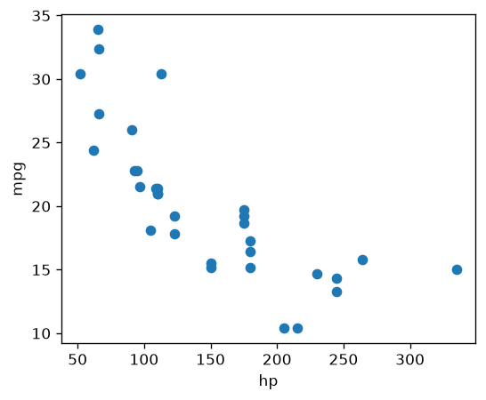
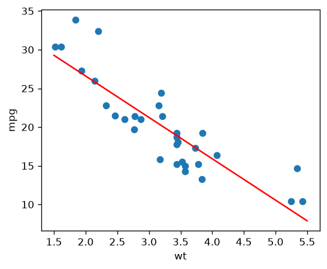
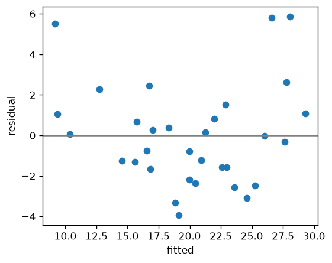

[7장] 상관 분석과 회귀 분석
빅데이터개론
7장
상관 분석과 회귀 분석
2027학년도 「빅데이터개론」의 준비 중인 교재입니다. 편집 상태를 검토하기 위해 미리 공개한 것으로, 수업 전에 내용과 순서가 바뀔 수 있습니다.
학사 9주차 · 교재 07 · 3부 데이터 분석 · ADsP 3과목 데이터분석 > 통계분석 (기초 통계분석, 다변량 분석 가운데 상관 분석)
두 변수가 함께 변하는 정도를 수로 나타내는 것이 상관 분석이고, 한 변수를 다른 변수들의 식으로 설명하는 것이 회귀 분석이다. ADsP 3과목에서 출력 해석 문항이 가장 꾸준히 나오는 주제가 회귀 분석이다. 시험은 회귀 분석을 실행하는 코드를 묻지 않고, 결과표의 어느 숫자가 무엇을 뜻하는지를 묻는다. 이 장은 결과표를 읽는 순서와 숫자 사이의 관계를 익힌다.
교재 06의 가설 검정(귀무 가설, 유의 확률, 유의수준, t 분포와 F 분포)을 전제로 한다. 분석은 파이썬으로 실행하고, 장의 끝에서 같은 분석을 R로 실행한 출력을 읽는다. 두 출력의 숫자는 같고, 배치와 이름만 다르다.
이 장의 핵심 용어 다섯을 먼저 정의해 둔다.
| 용어 | 첫 정의 | 다루는 절 |
|---|---|---|
| 상관 계수 | 두 변수의 선형 관계의 방향과 강도를 -1에서 1 사이의 수로 나타낸 값 | 1절 |
| 회귀 계수 | 독립 변수가 1 늘 때 종속 변수가 평균 얼마나 변하는가를 나타내는 계수. 절편과 기울기 | 2절 |
| 잔차 | 관측값에서 모형의 예측값을 뺀 값. 모형이 설명하지 못한 부분 | 2절, 3절 |
| 결정 계수 | 종속 변수의 전체 변동 가운데 모형이 설명하는 비율. SSR ÷ SST | 2절, 3절 |
| 다중공선성 | 독립 변수끼리 상관이 강하여 계수의 추정이 불안정해진 상태 | 3절 |
학습 목표
- 산점도와 상관 계수로 두 변수의 관계를 설명하고, 피어슨 상관 계수와 스피어만 상관 계수를 구분하며, 상관 계수의 검정 결과를 읽는다.
- 최소제곱법의 뜻을 말하고, 회귀 분석 결과표에서 모형의 유의성(F 통계량), 계수의 유의성(t 값과 유의 확률), 설명력(결정 계수)을 찾아 해석한다.
- 분산분석표의 제곱합, 자유도, 평균 제곱, F 값과 결정 계수, 수정된 결정 계수 사이의 관계를 계산으로 확인한다.
- 회귀 모형의 가정을 잔차로 진단하고, 다중공선성을 분산팽창요인(VIF)으로 판단하며, 변수 선택 방법의 절차와 결과를 구분한다.
- 파이썬과 R의 회귀 결과표에서 같은 값을 짝짓고, R의
summary(lm()),anova(),cor.test(),step()출력을 읽는다.
수업의 흐름
- 시작하기(0절). 교재 06의 검정 도구 셋을 되짚고, 노트북의 첫 셀을 실행하여
mtcars의 열을 확인한다. - 개념과 따라 하기(1~3절). 1절은 상관 분석, 2절은 단순 회귀, 3절은 다중 회귀다. 따라 하기마다 결과표를 보기 전에 계수의 부호와 크기, 결정 계수를 먼저 예상하고, 셀을 실행한 뒤 예상과 견준다. 3절의 따라 하기에서 분산분석표의 분해(SST = SSR + SSE)를 계산으로 확인하고, 잔차와 VIF로 모형을 진단한다.
- 중심 실습(4절). 같은 모형의 파이썬 결과표와 R 결과표를 나란히 놓고 같은 값을 짝짓는다. 변수를 하나 더한 모형에서 다중공선성을 진단하여 해석 문장 하나를 쓰고, 복기에서 예상과 결과의 차이를 정리한다.
- R 출력 해석(5절). 시험에 나오는 모양의
summary(lm()),anova(),cor.test(),step()출력을 위에서부터 읽는다. - 연습 문제와 주간 문항 세트. 서술형 연습 문제(7절)로 결과표의 빈칸을 계산하고 해석을 써 보며, 세트의 1~10번을 수업에서 푼다.
제목 끝에 [선택]이 붙은 소절은 3시간에 넘치는 부분이다. 수업에서 생략하면 노트북의 해당 셀만 실행하고 결과를 읽어 둔다.
준비 사항
| 항목 | 내용 |
|---|---|
| 실습 노트북 | ADsP_07장_실습_학생용.ipynb. 「시작하기」, 「따라 하기 1~3」, 「중심 실습」의 절로 되어 있다 |
| 자료 | mtcars.csv. 자동차 32종의 연비와 제원을 적은 표다. 자료 폴더의 위치는 노트북 첫 코드 셀의 DATA에 적혀 있다 |
| 앞 장과의 연계 | 교재 06의 가설 검정(귀무 가설, 유의 확률, 유의수준), t 분포와 F 분포, 신뢰 구간을 전제로 한다. 교재 05의 분산과 표준편차, 교재 06의 표준화를 쓴다. 리스트와 for 반복문은 「파이썬 기초」에서 배운 그대로 쓴다 |
| 실습 환경 | 접속과 자료를 받는 방법은 부록 A에 있다 |
0. 시작하기
0.1 지난 장 되짚기
교재 06 「통계학 개론: 표본, 분포, 추정, 검정」에서 이 장이 그대로 쓰는 것은 셋이다.
- 검정 통계량 = (추정값 - 귀무 가설의 값) ÷ 표준 오차. 교재 06의 t-검정에서 평균의 차이를 표준 오차로 나누었다. 회귀 결과표의 t 값은 계수를 그 표준 오차로 나눈 값이다. 귀무 가설의 값이 0이기 때문이다.
- 유의 확률 < 유의수준이면 귀무 가설을 기각한다. 양측 검정에서 95% 신뢰 구간이 0을 포함하지 않는 것과 같은 결론이다. 회귀 결과표에는 계수마다 유의 확률과 95% 신뢰 구간이 함께 적힌다. 두 열의 판정은 늘 짝을 이룬다.
- F 분포는 0 이상의 값만 가지며 기각역이 오른쪽 꼬리다. 교재 06의 따라 하기 2에서 자유도 2와 29인 F 분포의 오른쪽 5% 자리 3.3277을 구하였다. 이 장의 두 변수 모형의 F 검정이 바로 그 분포를 쓴다.
교재 06의 4절은 “수동 변속기 차의 연비가 더 높은 것은 변속기 때문인가, 무게 같은 다른 변수 때문인가”라는 물음을 남겼다. 독립 표본 t-검정은 두 집단의 평균만 견주므로 이 물음에 답하지 못한다. 회귀 분석은 여러 변수를 함께 넣어 “다른 변수가 같을 때”의 차이를 잰다. 이 장은 그 도구를 만든다.
0.2 노트북 열기와 첫 셀의 실행
- 부록 A의 방법으로 JupyterLab을 열고
ADsP_07장_실습_학생용.ipynb를 연다. - 「시작하기」 아래의 첫 코드 셀을 실행한다. 이 셀은 statsmodels와 scipy의 함수들을 불러오고
mtcars.csv를 읽어 행과 열의 수, 앞의 다섯 행을 보인다. - 출력을 아래와 견준다.
[그림 자리: JupyterLab에서 첫 셀을 실행한 화면] 노트북
ADsP_07장_실습_학생용.ipynb의 「시작하기」 셀을 실행한 뒤의 화면. 셀 왼쪽의 실행 번호[1]과 셀 아래의 출력((32, 12)와 다섯 행의 표)이 보이게 찍는다. 찍을 곳: 실습 환경의 JupyterLab.
(32, 12)
model mpg wt hp qsec
0 Mazda RX4 21.0 2.620 110 16.46
1 Mazda RX4 Wag 21.0 2.875 110 17.02
2 Datsun 710 22.8 2.320 93 18.61
3 Hornet 4 Drive 21.4 3.215 110 19.44
4 Hornet Sportabout 18.7 3.440 175 17.02- 확인 1 첫 셀이 오류 없이 실행되어
(32, 12)와 앞의 다섯 행이 나왔다.
ModuleNotFoundError: No module named 'statsmodels'가 나면 실습 환경에 statsmodels가 없는 것이다. 교재 06과 달리 이 장은 statsmodels를 쓴다. 부록 A의 실습 환경을 확인하고 교수에게 알린다.
0.3 이 장의 물음
(32, 12)는 32행 12열이다. 자동차 32종이 관측값이고, 차 이름(model)을 뺀 11개 열이 변수의 후보다. 이 장은 연비(mpg)를 종속 변수로 놓고 다음 물음에 차례로 답한다.
- 연비는 무게, 마력과 얼마나 강하게 함께 변하는가(1절, 상관 분석).
- 무게가 1(1,000파운드) 늘면 연비는 평균 얼마나 줄어드는가(2절, 단순 회귀).
- 마력이 같은 차끼리 견주어도 무게의 효과는 같은 크기인가. 변수를 더하면 설명력은 얼마나 오르는가(3절, 다중 회귀).
- 확인 2 출력의 다섯 행에서 첫 차(
Mazda RX4)의 연비가 21.0, 무게가 2.620(2,620파운드), 마력이 110인 것을 읽었다.
1. 상관 분석
배경과 쓰임
국가데이터처(옛 통계청)의 통계용어사전은 상관계수를 “두 변수 간의 선형 상관관계의 정도를 보여주는 수치”로 정의하고, 부호는 방향을, 절댓값은 선형 관계에 가까운 정도를 나타낸다고 해설한다. 상관 분석은 분석의 첫 단계에서 쓰인다. 매출과 광고비처럼 함께 움직일 것으로 보이는 변수의 쌍을 상관행렬로 한꺼번에 훑어, 어느 변수를 회귀 모형에 넣을지, 어느 변수끼리 정보가 겹치는지를 가늠한다.
상관 계수는 숫자 하나로 요약되므로 오해도 쉽다. 아이스크림 판매량과 물놀이 사고 건수는 둘 다 기온을 따라 오르내려 상관이 높게 나오지만, 한쪽이 다른 쪽의 원인은 아니다. 이 절은 상관 계수의 계산과 성질, 검정, 그리고 해석의 세 가지 주의를 다룬다. 시험은 상관 계수의 성질, 피어슨과 스피어만의 구분, cor.test()의 출력을 묻는다.
1.1 산점도와 상관 계수
이 장에서 쓰는 자료는 mtcars다. 자동차 32종의 연비와 제원을 적은 표이고, 주로 다음 열을 쓴다.
| 열 | 뜻 |
|---|---|
mpg |
연비. 갤런당 달리는 마일 수이며 클수록 연료를 덜 쓴다 |
wt |
무게. 1,000파운드 단위다 |
hp |
마력 |
qsec |
1/4마일을 달리는 데 걸리는 시간(초). 작을수록 빠른 차다 |
drat |
뒤 차축의 기어비 |
cyl, disp |
기통 수, 배기량 |
두 변수의 관계를 볼 때에는 먼저 산점도를 그린다. 한 변수가 커질 때 다른 변수가 작아지는 관계를 음의 상관이라 하고, 함께 커지는 관계를 양의 상관이라 한다. 상관 계수는 이 관계의 방향과 강도를 하나의 수로 요약한 것이다. 여러 변수의 상관 계수를 한꺼번에 구한 표를 상관행렬이라 한다.
1.2 상관 계수의 성질
상관 계수 r의 성질은 다음과 같다.
| 성질 | 내용 |
|---|---|
| 범위 | -1 이상 1 이하다 |
| 부호 | 양수이면 양의 상관, 음수이면 음의 상관이다 |
| 크기 | 절댓값이 1에 가까울수록 점들이 직선에 가깝게 모인다. 0에 가까울수록 선형 관계가 약하다 |
| 단위 | 단위가 없다. 측정 단위를 바꾸어도(파운드를 킬로그램으로) 값이 변하지 않는다 |
| 대칭 | x와 y를 바꾸어도 값이 같다 |
상관 계수는 두 변수의 공분산을 각 변수의 표준편차의 곱으로 나눈 값이다.
상관 계수 = (x와 y의 공분산) ÷ (x의 표준편차 × y의 표준편차)
공분산은 두 변수의 편차를 곱하여 평균한 값이며 단위의 영향을 받는다. 표준편차로 나누어 단위를 없앤 것이 상관 계수다.
1.3 피어슨 상관 계수와 스피어만 상관 계수
상관 계수에는 여러 종류가 있다. 시험에서는 다음 둘의 구분을 묻는다.
| 구분 | 피어슨 상관 계수 | 스피어만 상관 계수 |
|---|---|---|
| 계산에 쓰는 것 | 값 자체 | 값의 순위. 순위로 바꾼 뒤 피어슨 상관 계수를 구한 것과 같다 |
| 대상 척도 | 등간 척도, 비율 척도(연속형 자료) | 서열 척도. 연속형 자료에도 쓸 수 있다 |
| 측정하는 관계 | 선형 관계 | 순위의 일치 정도. 곡선이더라도 한 방향으로 늘거나 주는 관계를 잡는다 |
| 성격 | 모수적 방법. 이상값의 영향을 크게 받는다 | 비모수적 방법(교재 06의 4.6절). 이상값의 영향을 덜 받는다 |
1.4 상관 계수의 검정
표본에서 구한 상관 계수가 0이 아니더라도, 모집단의 상관 계수가 0인데 우연히 그렇게 나왔을 수 있다. 상관 계수의 검정은 이것을 판단한다.
- 귀무 가설: 모집단의 상관 계수는 0이다.
- 대립 가설: 모집단의 상관 계수는 0이 아니다.
검정 통계량은 자유도 n - 2인 t 분포를 따른다.
t = r × √(n - 2) ÷ √(1 - r²)
표본이 크면 약한 상관도 유의하게 나온다. 유의하다는 것은 “0이 아니다”라는 뜻이지 “강하다”라는 뜻이 아니다.
1.5 해석할 때의 주의
- 상관은 인과가 아니다. 상관 계수가 크다는 것은 두 변수가 함께 변한다는 뜻일 뿐이고, 한 변수가 다른 변수의 원인이라는 뜻이 아니다. 두 변수에 함께 영향을 주는 제3의 변수가 있을 수 있다.
- 상관 계수가 0이어도 관계가 없다고 할 수 없다. 피어슨 상관 계수는 선형 관계만 잰다. 두 변수가 포물선 모양으로 관계되어 있으면 상관 계수는 0에 가깝게 나온다.
- 이상값 하나가 값을 크게 바꿀 수 있다. 그러므로 상관 계수를 구하기 전에 산점도를 먼저 본다.
따라 하기
노트북의 「따라 하기 1. 상관 분석」 셀을 위에서부터 실행한다. 0절에서 읽은 cars를 그대로 쓴다.
예상. 셀을 실행하기 전에 다음 넷을 노트에 적는다.
- 연비와 무게의 상관 계수의 부호는 무엇일까. 절댓값은 0.3, 0.6, 0.9 가운데 어디에 가까울까.
- 무게의 단위를 1,000파운드에서 킬로그램으로 바꾸면 공분산과 상관 계수는 각각 어떻게 될까.
- 마력과 연비의 관계에서 피어슨 상관 계수와 스피어만 상관 계수 가운데 절댓값이 큰 쪽은 어느 것일까. 산점도가 휘어 있다는 점을 고려한다.
- y가 x의 제곱인 자료(x는 -5부터 5까지)의 피어슨 상관 계수는 얼마일까.
실행과 결과. 다음 셀은 무게와 연비의 산점도를 그린다.

점들이 오른쪽 아래로 내려가는 띠를 이룬다. 무게가 큰 차일수록 연비가 낮다는 뜻이다. 다음 셀은 네 변수의 상관행렬을 구한다.
cols = ["mpg", "wt", "hp", "qsec"]
print(cars[cols].corr().round(3)) mpg wt hp qsec
mpg 1.000 -0.868 -0.776 0.419
wt -0.868 1.000 0.659 -0.175
hp -0.776 0.659 1.000 -0.708
qsec 0.419 -0.175 -0.708 1.000- 확인 3 상관행렬에서
mpg와wt의 상관 계수가 -0.868,hp와qsec의 상관 계수가 -0.708로 나왔다.
상관행렬은 다음과 같이 읽는다.
- 대각선의 값은 모두 1이다. 자기 자신과의 상관이기 때문이다.
- 대각선을 기준으로 위와 아래가 같다.
mpg와wt의 상관은wt와mpg의 상관과 같다. mpg와wt의 상관 계수는 -0.868이다. 부호가 음이므로 음의 상관이고, 절댓값이 1에 가까우므로 관계가 강하다.wt와qsec의 상관 계수는 -0.175다. 절댓값이 0에 가까우므로 선형 관계가 약하다.- 독립 변수의 후보끼리의 상관도 본다.
hp와qsec의 -0.708은 3.5절의 다중공선성과 중심 실습에서 다시 쓴다.
다음 두 셀은 공분산에서 상관 계수를 계산하고, 무게의 단위를 킬로그램으로 바꾸어 본다(1,000파운드는 약 453.6킬로그램).
cov = cars["mpg"].cov(cars["wt"])
r = cov / (cars["mpg"].std() * cars["wt"].std())
print("공분산:", round(cov, 4))
print("공분산 ÷ (표준편차 × 표준편차):", round(r, 4))공분산: -5.1167
공분산 ÷ (표준편차 × 표준편차): -0.8677
공분산(kg): -2320.9282
상관 계수(kg): -0.8677- 확인 4 공분산이 파운드 단위에서 -5.1167, 킬로그램 단위에서 -2320.9282로 크게 달라졌고, 상관 계수는 두 단위에서 모두 -0.8677로 같았다.
공분산은 무게의 단위를 바꾼 만큼(453.6배) 커졌다. 그래서 공분산의 크기만으로는 관계의 강도를 말할 수 없다. 상관 계수는 단위에 관계없이 같다.
다음 셀들은 스피어만 상관 계수를 구한다. method="spearman"을 넣으면 된다.
print(cars[cols].corr(method="spearman").round(3)) mpg wt hp qsec
mpg 1.000 -0.886 -0.895 0.467
wt -0.886 1.000 0.775 -0.225
hp -0.895 0.775 1.000 -0.667
qsec 0.467 -0.225 -0.667 1.000ranks = cars[cols].rank() # 열마다 작은 값부터 1, 2, 3, ... 순위를 매긴다
print(ranks.head())
print("순위의 피어슨 상관 계수(mpg, hp):", round(ranks["mpg"].corr(ranks["hp"]), 3)) mpg wt hp qsec
0 19.5 9.0 13.0 6.0
1 19.5 12.0 13.0 10.5
2 24.5 7.0 7.0 23.0
3 21.5 16.0 13.0 26.0
4 15.0 19.0 21.0 10.5
순위의 피어슨 상관 계수(mpg, hp): -0.895- 확인 5
mpg와hp의 상관 계수가 피어슨으로 -0.776, 스피어만으로 -0.895였고, 순위로 바꾼 값의 피어슨 상관 계수도 -0.895로 나왔다.
rank()는 값이 같으면 순위의 평균을 준다(첫 두 차는 연비가 같아 둘 다 19.5위).

마력이 커질수록 연비가 낮아지는 방향은 뚜렷하지만 모양이 휘어 있다. 이런 관계에서는 순위로 계산한 값의 절댓값이 더 크게 나온다.
다음 세 셀은 상관 계수를 검정한다.
r, p = stats.pearsonr(cars["mpg"], cars["wt"])
print(round(r, 3), p)-0.868 1.293958701350513e-10n = len(cars)
t = r * np.sqrt(n - 2) / np.sqrt(1 - r ** 2)
print("t =", round(t, 3), " 자유도 =", n - 2)t = -9.559 자유도 = 30
-0.895 5.085969430924425e-12마지막 줄은 stats.spearmanr()로 구한 mpg와 hp의 스피어만 상관 계수와 그 유의 확률이다.
- 확인 6 피어슨 상관 계수의 유의 확률이 1.293958701350513e-10으로 나왔고, 1.4절의 식으로 계산한 t 값이 -9.559, 자유도가 30이었다.
유의 확률의 e-10은 10의 -10제곱을 곱한다는 표기다. 1.29e-10은 0.000000000129이므로 유의수준 0.05보다 훨씬 작다. 귀무 가설을 기각하고, 연비와 무게 사이에 상관이 있다고 판단한다. t 값 -9.559는 2절의 단순 회귀에서 다시 나온다.
마지막 셀은 x가 -5부터 5까지이고 y가 x의 제곱인 자료의 상관 계수를 구한다. 리스트와 for 반복문으로 y를 만든다.
x = list(range(-5, 6)) # -5부터 5까지
y = []
for v in x:
y.append(v ** 2) # y는 x의 제곱이다
print(x)
print(y)
print("상관 계수:", round(np.corrcoef(x, y)[0, 1], 4))[-5, -4, -3, -2, -1, 0, 1, 2, 3, 4, 5]
[25, 16, 9, 4, 1, 0, 1, 4, 9, 16, 25]
상관 계수: 0.0- 확인 7 y가 x로 완전히 정해지는 자료인데 상관 계수가 0.0으로 나왔다.
x를 알면 y를 정확히 알 수 있으므로 두 변수에는 분명한 관계가 있다. 그러나 왼쪽 절반은 음의 관계, 오른쪽 절반은 양의 관계여서 선형 관계를 재는 피어슨 상관 계수는 0이 된다. 1.5절의 둘째 주의다.
복기
| 예상 | 결과 | 차이의 까닭 |
|---|---|---|
| 1. 연비와 무게의 상관 | -0.868. 음의 상관이고 강하다 | 산점도의 점이 오른쪽 아래로 좁은 띠를 이룬다. 절댓값 0.868은 0.9에 가깝다 |
| 2. 단위를 바꾼 공분산과 상관 계수 | 공분산은 -5.1167에서 -2320.9282로, 상관 계수는 -0.8677 그대로 | 공분산은 단위를 따라 커지고, 상관 계수는 표준편차로 나누어 단위를 없앴다 |
| 3. 마력과 연비의 두 상관 계수 | 피어슨 -0.776, 스피어만 -0.895 | 관계가 휘어 있어도 한 방향으로 줄기만 하면 순위는 거의 일치한다. 스피어만은 그 일치를 잰다 |
| 4. y = x²의 상관 계수 | 0.0 | 피어슨 상관 계수는 선형 관계만 잰다. 관계가 없다는 뜻이 아니다 |
따라 하기 1의 결과 가운데 2절과 3절에서 다시 쓰는 값은 셋이다. mpg와 wt의 -0.868(2절의 결정 계수가 이 값의 제곱이다), wt와 hp의 0.659(3절에서 두 변수를 함께 넣을 때 무게의 계수가 바뀌는 까닭이다), hp와 qsec의 -0.708(중심 실습의 다중공선성)이다.
2. 단순 회귀 분석
배경과 쓰임
국가데이터처의 통계용어사전은 회귀분석을 “종속변수와 독립변수 간의 선형 혹은 비선형 관계를 추정하는 통계적인 방법”으로 정의하고, 선형 회귀, 로지스틱 회귀, 다항 회귀, 라쏘 회귀 등 여러 형태가 있으며 넓은 의미에서 지도 학습의 일종으로 볼 수 있다고 해설한다. 이 장의 선형 회귀는 그 가운데 가장 기본이 되는 형태이고, 교재 10의 로지스틱 회귀와 교재 10~11의 분류 모형이 같은 “입력으로 출력을 설명한다”는 틀 위에 있다.
회귀 분석이 쓰이는 물음은 두 종류다. 하나는 예측이다. 매장의 면적과 유동 인구로 새 매장의 월 매출을 어림한다. 다른 하나는 효과의 추정이다. 무게가 1,000파운드 늘면 연비가 평균 얼마나 주는가처럼 계수 자체가 답이 된다. 예측이 목적이면 결정 계수와 잔차의 크기를, 효과의 추정이 목적이면 계수와 그 신뢰 구간을 먼저 본다. 시험은 결과표의 숫자가 무엇을 뜻하는지, 숫자 사이의 관계(t = 계수 ÷ 표준 오차, 결정 계수 = 상관 계수의 제곱)를 묻는다.
2.1 회귀 모형과 최소제곱법
회귀 분석은 한 변수의 값을 다른 변수의 식으로 설명한다. 설명되는 쪽을 종속 변수(반응 변수), 설명하는 쪽을 독립 변수(설명 변수)라 한다. 독립 변수가 하나이면 단순 회귀, 둘 이상이면 다중 회귀다.
단순 회귀 모형은 다음과 같다.
종속 변수 = 절편 + 기울기 × 독립 변수 + 오차
절편과 기울기를 회귀 계수라 한다. 관측값과 직선이 예측한 값의 차이를 잔차라 한다. 회귀 계수는 최소제곱법으로 정한다. 최소제곱법은 잔차의 제곱을 모두 더한 값(잔차 제곱합)이 가장 작아지는 직선을 고른다. 단순 회귀에서는 그 계수를 다음 식으로 바로 구할 수 있다.
기울기 = (x와 y의 공분산) ÷ (x의 분산), 절편 = (y의 평균) - 기울기 × (x의 평균)
절편의 식에서 알 수 있듯이 회귀 직선은 언제나 두 평균의 점(x의 평균, y의 평균)을 지난다. 최소제곱법으로 구한 잔차는 더하면 0이 된다.
2.2 결과표의 구성
statsmodels의 결과표는 세 덩어리로 되어 있다. 위 덩어리는 모형 전체에 관한 값이고, 가운데 덩어리는 계수 하나하나에 관한 값이며, 아래 덩어리는 잔차를 진단하는 값이다. 시험이 묻는 것은 위와 가운데다.
| 덩어리 | 항목 | 뜻 |
|---|---|---|
| 위 | No. Observations |
관측값의 수 |
| 위 | Df Model |
모형의 자유도. 독립 변수의 수다 |
| 위 | Df Residuals |
잔차의 자유도. 관측값의 수에서 추정한 계수의 수(절편 포함)를 뺀 값이다 |
| 위 | R-squared |
결정 계수. 종속 변수의 변동 가운데 모형이 설명하는 비율이다 |
| 위 | Adj. R-squared |
수정된 결정 계수(3.2절) |
| 위 | F-statistic, Prob (F-statistic) |
모형 전체의 유의성을 검정하는 F 통계량과 그 유의 확률 |
| 가운데 | coef |
회귀 계수의 추정값 |
| 가운데 | std err |
계수의 표준 오차. 추정값이 표본에 따라 흔들리는 정도다 |
| 가운데 | t |
t 값. 계수를 표준 오차로 나눈 값이다 |
| 가운데 | P>|t| |
계수의 유의 확률. “이 계수는 0이다”라는 귀무 가설을 검정한다 |
| 가운데 | [0.025 0.975] |
계수의 95% 신뢰 구간 |
2.3 결과표에서 확인하는 순서
결과표는 다음 순서로 읽는다. 문항도 이 셋 가운데 하나를 묻는다.
- 모형이 통계적으로 유의한가. F 통계량의 유의 확률을 본다. 귀무 가설은 “모든 기울기가 0이다”다.
- 계수가 유의한가. 계수마다 t 값의 유의 확률을 본다. 귀무 가설은 “이 계수는 0이다”다.
- 모형의 설명력은 얼마인가. 결정 계수를 본다.
단순 회귀에서는 다음 두 관계가 성립한다. 계산 문항에 쓰인다.
- 결정 계수는 상관 계수의 제곱이다.
- F 통계량은 기울기의 t 값의 제곱이다. 그러므로 모형의 유의 확률과 기울기의 유의 확률이 같다.
2.4 예측과 외삽
회귀식에 독립 변수의 값을 넣으면 종속 변수의 예측값을 얻는다. 예측에는 두 가지 한계가 따른다.
첫째, 예측값은 평균의 예측이다. 무게가 3인 차의 연비 예측값은 “무게가 3인 차들의 평균 연비”의 추정이고, 그 차 한 대의 연비는 잔차만큼 위아래로 흩어진다. 흩어짐의 크기는 잔차 표준 오차(MSE의 제곱근, R의 Residual standard error)로 어림한다. 따라 하기 2의 단순 회귀에서 잔차 제곱합 278.3219를 잔차의 자유도 30으로 나누면 MSE는 약 9.28이고, 그 제곱근은 약 3.05다. 연비 예측이 대략 3 안팎씩 빗나간다는 뜻이다.
둘째, 자료의 범위 밖에서 예측하는 것을 외삽이라 한다. mtcars의 무게는 약 1.5에서 5.4 사이에 있다. 무게가 0인 차(절편)나 무게가 8인 차의 연비는 회귀식으로 계산은 되지만, 그 범위에서도 관계가 직선이라는 근거가 자료에 없다. 실제로 무게가 8이면 회귀식은 37.2851 - 5.3445 × 8 ≈ -5.47이라는 불가능한 연비를 낸다.
| 예측의 종류 | 예 | 믿을 수 있는 정도 |
|---|---|---|
| 자료의 범위 안, 자료가 많은 곳 | 무게 3의 연비 | 가장 믿을 만하다 |
| 자료의 범위 안, 자료가 드문 곳 | 무게 5의 연비(무거운 차는 몇 대뿐이다) | 흩어짐이 커진다 |
| 자료의 범위 밖(외삽) | 무게 0이나 8의 연비 | 근거가 없다. 절편은 직선의 높이를 정하는 값으로만 읽는다 |
따라 하기
노트북의 「따라 하기 2. 단순 회귀 분석」 셀을 실행한다. 연비(mpg)를 무게(wt) 하나로 설명하는 모형을 만든다.
예상. 결과표를 보기 전에 계수의 부호와 크기, 결정 계수를 따라 하기 1의 값으로 어림한다. 단순 회귀에서는 다음이 성립한다.
기울기 = 상관 계수 × (종속 변수의 표준편차 ÷ 독립 변수의 표준편차)
2.1절의 기울기 식(공분산 ÷ x의 분산)에 상관 계수의 식을 넣으면 이 꼴이 된다. 기울기의 부호는 상관 계수의 부호와 같고, 크기는 두 변수의 흩어짐의 비율로 정해진다. 첫 셀은 이 어림에 쓰는 값을 낸다.
r_wt = cars["mpg"].corr(cars["wt"])
sd_y = cars["mpg"].std() # 연비의 표준편차
sd_x = cars["wt"].std() # 무게의 표준편차
print("상관 계수:", round(r_wt, 4))
print("연비의 표준편차:", round(sd_y, 4), " 무게의 표준편차:", round(sd_x, 4))
print("어림한 기울기:", round(r_wt * sd_y / sd_x, 4))상관 계수: -0.8677
연비의 표준편차: 6.0269 무게의 표준편차: 0.9785
어림한 기울기: -5.3445- 확인 8 상관 계수 -0.8677, 연비의 표준편차 6.0269, 무게의 표준편차 0.9785가 나왔고, 어림한 기울기가 -5.3445였다.
손으로 하면 -0.87 × 6.03 ÷ 0.98 ≈ -5.35다. 이 값을 적어 두고 다음 물음에도 예상을 적은 뒤 결과표를 연다.
- 결과표의
wt계수는 얼마일까. 부호는 무엇일까. - 결정 계수(
R-squared)는 얼마일까. 따라 하기 1의 상관 계수에서 계산한다. wt계수의 t 값은 얼마일까. 따라 하기 1의 상관 계수의 검정에서 찾는다.- 절편은 무게가 0인 차의 연비 예측값이다. 이 값을 실제 뜻으로 읽어도 될까.
실행과 결과. 다음 셀이 모형을 적합하고 결과표를 낸다. "mpg ~ wt"는 물결표의 왼쪽이 종속 변수, 오른쪽이 독립 변수라는 뜻의 식이다.
model1 = smf.ols("mpg ~ wt", data=cars).fit()
print(model1.summary()) OLS Regression Results
==============================================================================
Dep. Variable: mpg R-squared: 0.753
Model: OLS Adj. R-squared: 0.745
Method: Least Squares F-statistic: 91.38
Date: Sat, 14 Nov 2026 Prob (F-statistic): 1.29e-10
Time: 10:40:41 Log-Likelihood: -80.015
No. Observations: 32 AIC: 164.0
Df Residuals: 30 BIC: 167.0
Df Model: 1
Covariance Type: nonrobust
==============================================================================
coef std err t P>|t| [0.025 0.975]
------------------------------------------------------------------------------
Intercept 37.2851 1.878 19.858 0.000 33.450 41.120
wt -5.3445 0.559 -9.559 0.000 -6.486 -4.203
==============================================================================
Omnibus: 2.988 Durbin-Watson: 1.252
Prob(Omnibus): 0.225 Jarque-Bera (JB): 2.399
Skew: 0.668 Prob(JB): 0.301
Kurtosis: 2.877 Cond. No. 12.7
==============================================================================
...- 확인 9 결정 계수가 0.753, F 통계량이 91.38,
wt의 계수가 -5.3445로 나왔다.
2.3절의 순서로 읽는다.
- F 통계량의 유의 확률이 1.29e-10으로 0.05보다 작으므로 모형은 유의하다.
wt의 유의 확률이 0.000(소수 셋째 자리까지 0이라는 표시다)으로 0.05보다 작으므로 무게의 계수는 유의하다.- 결정 계수가 0.753이므로 연비 변동의 75.3%를 이 모형이 설명한다.
잔차의 자유도 30은 관측값 32에서 추정한 계수 2개(절편과 기울기)를 뺀 값이다. 이 표에서 얻는 회귀식은 다음과 같다.
연비 = 37.2851 - 5.3445 × 무게
기울기 -5.3445는 무게가 1(1,000파운드) 늘 때 연비가 평균 5.3445만큼 줄어든다는 뜻이다. 절편 37.2851은 무게가 0일 때의 예측값이어서 실제 의미는 없고, 직선의 높이를 정하는 값으로 본다.
다음 셀은 결과표의 값을 하나씩 꺼낸다. params는 계수, bse는 표준 오차, tvalues는 t 값이다.
print(model1.params.round(4)) # 회귀 계수
print(model1.bse.round(4)) # 계수의 표준 오차
print(model1.tvalues.round(3)) # t 값
print("계수 ÷ 표준 오차:", round(model1.params["wt"] / model1.bse["wt"], 3))Intercept 37.2851
wt -5.3445
dtype: float64
Intercept 1.8776
wt 0.5591
dtype: float64
Intercept 19.858
wt -9.559
dtype: float64
계수 ÷ 표준 오차: -9.559- 확인 10
wt의 표준 오차가 0.5591로 나왔고, 계수 ÷ 표준 오차가 t 값과 같은 -9.559였다.
t 값은 교재 06의 t-검정과 같은 꼴로, 추정값이 귀무 가설의 값 0에서 표준 오차의 몇 배만큼 떨어져 있는가를 나타낸다.
다음 셀은 2.1절의 식으로 계수를 직접 계산한다.
slope = cars["wt"].cov(cars["mpg"]) / cars["wt"].var()
intercept = cars["mpg"].mean() - slope * cars["wt"].mean()
print("기울기:", round(slope, 4))
print("절편:", round(intercept, 4))기울기: -5.3445
절편: 37.2851- 확인 11 공분산과 분산으로 계산한 기울기 -5.3445와 절편 37.2851이 결과표의
coef와 같았다.

다음 셀은 잔차를 본다.
print(model1.resid.head().round(4))
print("잔차의 합:", round(model1.resid.sum(), 6))
print("잔차 제곱합:", round((model1.resid ** 2).sum(), 4))0 -2.2826
1 -0.9198
2 -2.0860
3 1.2973
4 -0.2001
dtype: float64
잔차의 합: -0.0
잔차 제곱합: 278.3219- 확인 12 잔차의 합이 0(
-0.0)이고 잔차 제곱합이 278.3219로 나왔다.
첫 차의 잔차 -2.2826은 실제 연비가 예측보다 2.2826 낮다는 뜻이다. -0.0은 아주 작은 계산 오차에 음의 부호가 붙은 0이다.
마지막 셀은 2.3절의 두 관계를 확인한다.
r_wt = cars["mpg"].corr(cars["wt"])
print("상관 계수의 제곱:", round(r_wt ** 2, 4), " 결정 계수:", round(model1.rsquared, 4))
print("기울기 t 값의 제곱:", round(model1.tvalues["wt"] ** 2, 2), " F 통계량:", round(model1.fvalue, 2))상관 계수의 제곱: 0.7528 결정 계수: 0.7528
기울기 t 값의 제곱: 91.38 F 통계량: 91.38- 확인 13 상관 계수의 제곱과 결정 계수가 0.7528로 같고, t 값의 제곱과 F 통계량이 91.38로 같았다.
따라 하기 1의 상관 계수 검정에서 나온 t 값 -9.559와 유의 확률 1.29e-10도 이 모형의 기울기의 t 값, 유의 확률과 같다. 독립 변수가 하나일 때 상관 계수의 검정, 기울기의 검정, 모형의 F 검정은 모두 같은 검정이다.
복기
| 예상 | 결과 | 차이의 까닭 |
|---|---|---|
1. wt 계수 |
-5.3445. 손으로 어림한 -5.35와 같다 | 단순 회귀의 기울기는 상관 계수와 두 표준편차로 정해진다. 부호는 상관 계수의 부호다 |
| 2. 결정 계수 | 0.753(0.7528) | (-0.868)² ≈ 0.753. 단순 회귀에서 결정 계수는 상관 계수의 제곱이다 |
3. wt의 t 값 |
-9.559 | 상관 계수의 검정(1.4절)과 기울기의 검정은 같은 검정이다 |
| 4. 절편의 뜻 | 37.2851 | 무게 0은 자료의 범위(약 1.5~5.4) 밖이다. 범위 밖에서 예측하는 외삽이므로 실제 뜻으로 읽지 않는다 |
예상이 틀렸다면 어디서 틀렸는지 적는다. 기울기의 크기를 상관 계수 -0.868 그대로라고 예상한 학생은 단위를 빠뜨린 것이다. 상관 계수는 단위가 없고, 기울기는 “연비의 단위 ÷ 무게의 단위”를 가진다. 같은 자료라도 무게를 킬로그램으로 재면 상관 계수는 그대로이고 기울기는 453.6분의 1이 된다.
3. 다중 회귀 분석
배경과 쓰임
현실의 결과는 원인 하나로 정해지지 않는다. 매장의 매출은 면적과 유동 인구와 주변 경쟁 매장의 수가 함께 정한다. 다중 회귀는 이런 변수들을 한 식에 넣어 다른 변수가 같을 때 한 변수의 효과를 잰다. 교재 06에서 변속기 종류에 따라 연비가 달랐지만, 수동 변속기 차가 대체로 가볍다면 그 차이의 일부는 무게의 몫일 수 있다. 무게를 함께 넣은 모형이 그 몫을 떼어 낸다.
변수를 많이 넣는다고 좋은 모형이 되지는 않는다. 쓸모없는 변수도 결정 계수를 조금씩 올리고(3.2절), 서로 정보가 겹치는 변수들은 계수를 불안정하게 만든다(3.5절). 그래서 실무의 회귀 분석은 모형을 적합하는 일보다 모형을 진단하고(3.4절) 변수를 고르는(3.6절) 일에 더 많은 시간을 쓴다. statsmodels의 결과 객체는 이 진단에 필요한 값(제곱합, 수정된 결정 계수, AIC, 잔차)을 속성으로 담고 있어, 결과표에 적힌 값을 하나씩 꺼내 계산을 확인할 수 있다. 시험은 분산분석표의 빈칸 계산, 수정된 결정 계수, 잔차 진단의 도구, VIF의 기준, step()의 출력을 묻는다.
3.1 다중 회귀 모형과 계수의 해석
독립 변수가 둘 이상인 회귀 모형이 다중 회귀 모형이다. 이 장에서는 무게(wt)에 마력(hp)을 더한 모형을 쓴다. 결과표를 읽는 순서는 단순 회귀와 같다.
다중 회귀에서 계수는 다른 독립 변수의 값이 같을 때 그 변수가 1 늘면 종속 변수가 평균 얼마나 변하는가를 뜻한다. 단순 회귀의 계수와 다중 회귀의 같은 변수의 계수는 대개 다르다. 독립 변수끼리 상관이 있으면, 단순 회귀에서는 빠진 변수의 몫까지 들어 있던 계수가 다중 회귀에서 나뉘기 때문이다.
계수의 크기는 변수의 단위에 따라 달라지므로 계수의 절댓값으로 변수의 중요도를 견주지 않는다.
3.2 수정된 결정 계수
결정 계수는 독립 변수를 더하면 그 변수가 쓸모없더라도 줄어들지 않는다. 그래서 변수의 수가 다른 모형을 결정 계수로 견주면 변수가 많은 모형이 언제나 유리하다. 수정된 결정 계수는 변수의 수만큼 벌점을 주어 이 문제를 줄인 값이다.
수정된 결정 계수 = 1 - (1 - 결정 계수) × (n - 1) ÷ (n - 독립 변수의 수 - 1)
- 수정된 결정 계수는 결정 계수보다 크지 않다.
- 쓸모없는 변수를 더하면 결정 계수는 조금 오르지만 수정된 결정 계수는 내려갈 수 있다.
- 독립 변수의 수가 다른 모형을 견줄 때에는 수정된 결정 계수를 쓴다.
3.3 분산분석표
회귀 분석의 F 통계량은 분산분석표에서 나온다. 종속 변수의 전체 변동을 모형이 설명한 부분과 설명하지 못한 부분으로 나눈 표다.
| 이름 | 기호 | 뜻 |
|---|---|---|
| 총 제곱합 | SST | 관측값이 평균에서 떨어진 정도의 제곱합. 전체 변동이다 |
| 회귀 제곱합 | SSR | 예측값이 평균에서 떨어진 정도의 제곱합. 모형이 설명한 변동이다 |
| 잔차 제곱합 | SSE | 관측값이 예측값에서 떨어진 정도의 제곱합. 설명하지 못한 변동이다 |
세 값 사이에는 SST = SSR + SSE가 성립한다. 분산분석표의 빈칸을 채우는 문항은 다음 관계로 푼다.
- 평균 제곱 = 제곱합 ÷ 자유도
- F = 회귀의 평균 제곱(MSR) ÷ 잔차의 평균 제곱(MSE)
- 회귀의 자유도 = 독립 변수의 수, 잔차의 자유도 = 관측값의 수 - 독립 변수의 수 - 1, 전체의 자유도 = 관측값의 수 - 1
- 결정 계수 = SSR ÷ SST = 1 - SSE ÷ SST
F 통계량은 자유도가 (회귀의 자유도, 잔차의 자유도)인 F 분포를 따른다. 교재 06에서 본 대로 F 분포는 0 이상의 값만 가지므로 기각역은 오른쪽 꼬리다.
[그림 자리: 분산분석표의 분해(SST = SSR + SSE)] 단순 회귀(
mpg ~ wt)의 산점도 위에 회귀 직선과 연비의 평균을 가로선으로 긋고, 관측값 한 점을 골라 세 선분을 색으로 나누어 표시한 도식. 평균에서 관측값까지(total), 평균에서 예측값까지(regression), 예측값에서 관측값까지(residual). 그림 옆에 막대 하나를 SST 1126.05로 놓고 SSR 847.73과 SSE 278.32로 나누어 칠한다(따라 하기 3의 값). 그림 안의 글자는 영문(total, explained, residual)으로 쓴다. 만들 곳: matplotlib으로 그리거나 도식 편집기.
분해는 관측값 하나에서 시작한다. 관측값이 평균에서 떨어진 거리(전체 편차)는 “예측값이 평균에서 떨어진 거리”와 “관측값이 예측값에서 떨어진 거리”의 합이다. 이 두 거리를 각각 제곱하여 모든 관측값에 대해 더하면 SSR과 SSE가 되고, 그 합이 SST다. 최소제곱법으로 구한 직선에서는 두 거리의 곱의 합이 0이 되므로 제곱한 뒤에도 덧셈이 그대로 성립한다.
| 제곱합 | 단순 회귀 mpg ~ wt(따라 하기 3에서 계산) |
읽는 법 |
|---|---|---|
| SST | 1126.0472 | 모형과 관계없이 연비 자체가 가진 변동이다. 독립 변수를 바꾸어도 같다 |
| SSR | 847.7252 | 무게로 설명한 변동이다 |
| SSE | 278.3219 | 남은 변동이다. 따라 하기 2의 잔차 제곱합과 같다 |
| 결정 계수 | 847.7252 ÷ 1126.0472 ≈ 0.753 | 전체 변동 가운데 설명한 비율이다 |
SST가 모형과 관계없이 고정되어 있으므로, 변수를 더하면 SSR이 늘고 SSE가 준다. 결정 계수가 변수를 더해도 내려가지 않는 까닭이 여기 있다(3.2절).
statsmodels의 anova_lm()은 기본으로 순차 제곱합(Type I)을 낸다. statsmodels의 문서는 각 항을 모형에서 그 앞에 놓인 항들에 대해서만 검정하므로 항의 순서에 따라 결과가 달라진다고 적는다. 따라 하기 3의 분산분석표에서 wt 줄의 제곱합 847.7252가 단순 회귀의 SSR과 같은 것이 그 때문이다. wt를 먼저 넣었으므로 wt 줄은 wt 하나가 설명한 몫이고, hp 줄은 wt가 들어 있는 상태에서 hp가 더 설명한 몫이다.
3.4 회귀 모형의 가정과 잔차 진단
회귀 분석의 검정 결과는 다음 가정이 성립할 때 믿을 수 있다.
| 가정 | 내용 | 확인하는 방법 |
|---|---|---|
| 선형성 | 독립 변수와 종속 변수의 관계가 선형이다 | 산점도, 잔차 그림 |
| 독립성 | 잔차가 독립 변수와 관계가 없다 | 잔차 그림 |
| 등분산성 | 독립 변수의 값이 달라져도 잔차의 흩어진 정도가 일정하다 | 잔차 그림 |
| 비상관성 | 잔차끼리 상관이 없다 | 더빈-왓슨 통계량 |
| 정상성(정규성) | 잔차가 정규 분포를 따른다 | 정규 Q-Q 그림, 샤피로-윌크 검정 |
| 진단 도구 | 읽는 법 |
|---|---|
| 잔차 그림 | 가로축에 예측값, 세로축에 잔차를 놓은 산점도다. 가정이 성립하면 점들이 0을 중심으로 무늬 없이 고르게 흩어진다. 곡선 모양이면 선형성이, 나팔 모양이면 등분산성이 의심된다 |
| 정규 Q-Q 그림 | 잔차를 크기 순으로 늘어놓고 정규 분포의 분위수와 짝지은 그림이다. 점들이 직선 위에 놓이면 정규성이 성립한다. 끝에서 직선을 벗어나면 꼬리가 정규 분포와 다르다 |
| 샤피로-윌크 검정 | 귀무 가설은 “잔차는 정규 분포를 따른다”다. 유의 확률이 유의수준보다 작으면 정규성을 기각한다 |
| 더빈-왓슨 통계량 | 0에서 4 사이의 값이다. 2에 가까우면 잔차끼리 상관이 없고, 0에 가까우면 양의 자기상관, 4에 가까우면 음의 자기상관이 있다 |
샤피로-윌크 검정에서는 귀무 가설이 “가정이 성립한다” 쪽이므로 유의 확률이 클수록 가정에 맞는 결과다.
잔차 그림에서 보는 모양은 셋으로 나눈다. 미국 국립표준기술연구소(NIST)의 공학 통계 안내서는 모형의 함수 꼴이 맞으면 잔차가 0의 위아래로 고르게 흩어지고, 맞지 않으면 잔차에 곡선이나 주기 같은 구조가 남으며, 예측값이 커질수록 잔차의 폭이 넓어지는 나팔(horn) 모양은 오차의 표준편차가 일정하지 않다는 신호라고 설명한다.
[그림 자리: 잔차 그림의 세 유형] 가로축이 예측값(fitted value), 세로축이 잔차(residual)인 작은 산점도 세 장을 나란히 놓은 도식. 왼쪽은 0을 중심으로 무늬 없이 고르게 흩어진 모양(OK), 가운데는 U자로 휜 모양(curved: nonlinearity), 오른쪽은 왼쪽에서 오른쪽으로 폭이 넓어지는 나팔 모양(funnel: unequal variance). 세 장 모두 0의 가로선을 긋는다. 그림 안의 글자는 영문으로 쓴다. 만들 곳: matplotlib으로 모의 자료를 만들어 그리거나 도식 편집기.
| 잔차 그림의 모양 | 의심하는 가정 | 흔한 원인 | 대처의 예 |
|---|---|---|---|
| 0을 중심으로 무늬 없이 고르게 흩어진다 | 없음 | 그대로 해석한다 | |
| U자나 거꾸로 된 U자로 휜다 | 선형성 | 실제 관계가 곡선이다. 중요한 변수가 빠졌다 | 독립 변수의 제곱항을 더하거나 로그로 변환한다. 빠진 변수를 찾는다 |
| 예측값이 커질수록 폭이 넓어진다(나팔) | 등분산성 | 값이 클수록 흩어짐도 큰 자료(매출, 소득)다 | 종속 변수를 로그로 변환한다 |
이 장의 따라 하기 3에서 그린 잔차 그림은 가운데가 낮고 양쪽이 높은 모양이 조금 보인다. 첫째 유형과 둘째 유형의 중간이다. 판단은 그림 하나로 하지 않고 산점도와 Q-Q 그림, 검정을 함께 본다.
3.5 다중공선성
다중공선성은 독립 변수끼리 상관이 강한 상태를 말한다. 독립 변수들이 같은 정보를 나누어 가지므로 다음 문제가 생긴다.
- 계수의 표준 오차가 커져서, 실제로는 관계가 있는 변수의 계수가 유의하지 않게 나온다.
- 자료가 조금만 바뀌어도 계수의 값과 부호가 크게 바뀐다.
- 모형 전체는 유의한데(F 검정) 계수는 유의하지 않은(t 검정) 결과가 나온다.
진단에는 분산팽창요인(VIF, variance inflation factor)을 쓴다. 독립 변수 하나를 나머지 독립 변수들로 회귀하여 얻은 결정 계수를 R²라 하면 다음과 같다.
VIF = 1 ÷ (1 - R²)
다른 변수들이 그 변수를 잘 설명할수록 R²가 1에 가까워지고 VIF가 커진다. 다른 변수와 상관이 전혀 없으면 VIF는 1이다. VIF는 그 변수의 계수의 분산이 다중공선성 때문에 몇 배로 커졌는가를 나타낸다. 판단의 기준은 경험칙이며 문헌마다 다르다. 흔히 10 이상이면 다중공선성이 심하다고 보고, 4나 5를 넘으면 살펴보아야 한다고 보는 문헌도 있다. ADsP는 10을 기준으로 묻는다.
다중공선성은 다음 순서로 진단한다. 먼저 독립 변수의 상관행렬에서 절댓값이 큰 쌍을 찾는다. 다음으로 결과표에서 “모형은 유의한데 계수가 유의하지 않은” 모양이나, 변수를 하나 더하거나 뺄 때 다른 변수의 계수와 표준 오차가 크게 바뀌는지를 본다. 마지막으로 VIF를 구하여 정도를 수로 나타낸다. 상관행렬은 두 변수 사이의 관계만 보이므로, 세 변수 이상이 함께 얽힌 다중공선성은 VIF로만 드러난다.
대처 방법은 상관이 강한 변수 가운데 하나를 빼거나, 주성분 분석으로 변수를 줄이거나(교재 08), 벌점을 주는 회귀(3.6절)를 쓰는 것이다. 다중공선성은 독립 변수끼리의 문제다. 독립 변수와 종속 변수의 상관이 강한 것은 다중공선성이 아니며 모형에 바람직한 일이다.
3.6 변수 선택 방법
독립 변수의 후보가 여럿일 때 어느 변수를 모형에 넣을지 정하는 방법이다.
| 방법 | 절차 |
|---|---|
| 전진 선택법 | 절편만 있는 모형에서 시작하여, 기준을 가장 많이 개선하는 변수를 하나씩 더한다. 더 넣어도 개선되지 않으면 멈춘다. 한번 넣은 변수는 빼지 않는다 |
| 후진 제거법 | 모든 변수를 넣은 모형에서 시작하여, 빼었을 때 기준이 가장 많이 개선되는 변수를 하나씩 뺀다. 더 빼도 개선되지 않으면 멈춘다. 한번 뺀 변수는 다시 넣지 않는다 |
| 단계별 방법 | 전진 선택법처럼 변수를 더하되, 더할 때마다 이미 들어 있는 변수 가운데 뺄 것이 있는지 다시 검토한다 |
| 모든 가능한 조합 | 변수의 모든 조합으로 모형을 만들어 가장 좋은 것을 고른다. 후보가 k개이면 2의 k제곱 개의 모형을 견주어야 하므로 변수가 많으면 계산이 많아진다 |
모형을 견주는 기준으로는 AIC와 BIC를 쓴다. 둘 다 모형이 자료에 맞는 정도에 계수의 수만큼 벌점을 더한 값이며, 작을수록 좋은 모형이다. BIC는 관측값의 수가 클수록 벌점이 커서 AIC보다 변수가 적은 모형을 고르는 경향이 있다. R의 step()은 AIC를 기준으로 하며 direction으로 방법("backward", "forward", "both")을 정한다.
AIC와 BIC는 결과표의 로그 가능도(Log-Likelihood)에서 계산된다. 추정한 계수의 수를 k, 관측값의 수를 n이라 하면 다음과 같다.
AIC = -2 × 로그 가능도 + 2 × k, BIC = -2 × 로그 가능도 + k × log(n)
따라 하기 2의 결과표로 확인할 수 있다. 로그 가능도가 -80.015이고 계수가 2개(절편과 기울기)이므로 AIC = 160.03 + 4 ≈ 164.0, BIC = 160.03 + 2 × log(32) ≈ 160.03 + 6.93 ≈ 167.0이다. 결과표의 AIC: 164.0, BIC: 167.0과 같다. 첫 항은 모형이 자료에 잘 맞을수록 작아지고, 둘째 항은 계수가 많을수록 커진다. n이 8 이상이면 log(n)이 2보다 크므로 BIC가 계수 하나에 주는 벌점이 AIC보다 크다. BIC가 변수가 적은 모형을 고르는 경향은 여기서 나온다.
변수 선택 방법이 다르면 최종 모형이 다를 수 있다. 전진 선택법과 후진 제거법은 한 번에 한 변수만 보고 결정을 되돌리지 않으므로, 모든 조합 가운데 가장 좋은 모형을 찾는다는 보장이 없다.
변수를 고르는 대신 계수의 크기에 벌점을 주어 계수를 줄이는 방법도 있다. 이 장에서는 이름과 차이만 다룬다.
| 방법 | 벌점 | 특징 |
|---|---|---|
| 릿지 회귀 | 계수의 제곱의 합(L2) | 계수를 0에 가깝게 줄이되 0으로 만들지는 않는다. 다중공선성이 있을 때 계수를 안정시킨다 |
| 라쏘 회귀 | 계수의 절댓값의 합(L1) | 일부 계수를 정확히 0으로 만들어 변수 선택의 효과를 낸다 |
| 엘라스틱넷 | L1과 L2를 함께 | 서로 상관이 강한 변수들을 함께 고르는 경향이 있다 |
따라 하기
노트북의 「따라 하기 3. 다중 회귀 분석」 셀을 실행한다.
예상. 무게(wt)에 마력(hp)을 더한 모형의 결과표를 보기 전에, 마력 하나로 설명한 모형의 계수와 두 독립 변수의 상관 계수를 먼저 본다.
m_hp = smf.ols("mpg ~ hp", data=cars).fit()
print("hp 하나의 계수:", round(m_hp.params["hp"], 4), " 결정 계수:", round(m_hp.rsquared, 4))
print("wt와 hp의 상관 계수:", round(cars["wt"].corr(cars["hp"]), 3))hp 하나의 계수: -0.0682 결정 계수: 0.6024
wt와 hp의 상관 계수: 0.659- 확인 14 마력 하나로 설명한 모형의 계수가 -0.0682, 결정 계수가 0.6024였고, 무게와 마력의 상관 계수가 0.659로 나왔다.
이 값과 따라 하기 2의 결과(무게 하나의 계수 -5.3445, 결정 계수 0.7528)로 다음 넷을 예상하여 적는다.
- 두 변수 모형에서
wt의 계수는 -5.3445보다 0에 가까워질까, 멀어질까.hp의 계수는 -0.0682와 견주어 어떻게 될까. - 두 계수의 부호는 무엇일까.
- 결정 계수는 0.7528보다 클까. 0.7528 + 0.6024 = 1.3552가 될 수 있을까.
- 두 계수는 유의수준 0.05에서 모두 유의할까.
두 독립 변수의 상관이 0이 아니면, 단순 회귀의 계수에는 함께 움직이는 다른 변수의 몫이 섞여 있다. 무거운 차는 마력도 큰 경향(0.659)이 있으므로, 무게 하나의 계수 -5.3445에는 “무거우면 마력도 커서 연비가 낮아지는” 몫이 들어 있다. 마력을 함께 넣으면 그 몫이 hp의 계수로 옮겨 간다.
실행과 결과. 다음 셀은 독립 변수에 마력을 더한 모형을 만든다.
model2 = smf.ols("mpg ~ wt + hp", data=cars).fit()
print(model2.summary()) OLS Regression Results
==============================================================================
Dep. Variable: mpg R-squared: 0.827
Model: OLS Adj. R-squared: 0.815
Method: Least Squares F-statistic: 69.21
Date: Sat, 14 Nov 2026 Prob (F-statistic): 9.11e-12
Time: 10:40:42 Log-Likelihood: -74.326
No. Observations: 32 AIC: 154.7
Df Residuals: 29 BIC: 159.0
Df Model: 2
Covariance Type: nonrobust
==============================================================================
coef std err t P>|t| [0.025 0.975]
------------------------------------------------------------------------------
Intercept 37.2273 1.599 23.285 0.000 33.957 40.497
wt -3.8778 0.633 -6.129 0.000 -5.172 -2.584
hp -0.0318 0.009 -3.519 0.001 -0.050 -0.013
==============================================================================
Omnibus: 5.303 Durbin-Watson: 1.362
Prob(Omnibus): 0.071 Jarque-Bera (JB): 4.046
Skew: 0.855 Prob(JB): 0.132
Kurtosis: 3.332 Cond. No. 588.
==============================================================================
...- 확인 15 F 통계량이 69.21(유의 확률 9.11e-12),
hp의 유의 확률이 0.001, 결정 계수가 0.827로 나왔다.
- F 통계량은 69.21이고 유의 확률은 9.11e-12다. 모형은 유의하다.
wt의 유의 확률은 0.000,hp의 유의 확률은 0.001이다. 두 계수 모두 유의수준 0.05에서 유의하다.- 결정 계수는 0.827이다. 변수를 하나 더하자 0.753에서 0.827로 올랐다.
회귀식은 다음과 같다.
연비 = 37.2273 - 3.8778 × 무게 - 0.0318 × 마력
마력이 같은 두 차를 견주면 무게가 1 큰 차의 연비가 평균 3.8778 낮다. 단순 회귀에서 -5.3445였던 무게의 계수가 -3.8778로 바뀐 것은, 무게가 큰 차가 마력도 큰 경향이 있어서(상관 계수 0.659) 단순 회귀에서는 마력의 몫까지 무게의 계수에 들어가 있었기 때문이다.
다음 두 셀은 예측값과 계수의 신뢰 구간을 구한다. 무게가 3이고 마력이 150인 차의 연비를 예측하면 37.2273 - 3.8778 × 3 - 0.0318 × 150 ≈ 20.83이다.
new = pd.DataFrame({"wt": [3.0], "hp": [150]})
print(model2.predict(new).round(3))0 20.828
dtype: float64
0 1
Intercept 33.9574 40.4972
wt -5.1719 -2.5837
hp -0.0502 -0.0133- 확인 16 예측값이 20.828로 나왔고,
hp계수의 95% 신뢰 구간이 -0.0502에서 -0.0133까지로 0을 포함하지 않았다.
계수의 신뢰 구간이 0을 포함하지 않는 것과 그 계수가 유의수준 0.05에서 유의한 것은 같은 결론이다. 교재 06에서 평균의 차이에 대한 신뢰 구간과 t-검정의 관계와 같다.
다음 두 셀은 수정된 결정 계수를 다룬다. 첫 셀은 3.2절의 식으로 계산한다.
n = int(model2.nobs)
k = int(model2.df_model)
adj = 1 - (1 - model2.rsquared) * (n - 1) / (n - k - 1)
print("n =", n, " 독립 변수의 수 =", k)
print("계산한 값:", round(adj, 4), " 결과표의 값:", round(model2.rsquared_adj, 4))n = 32 독립 변수의 수 = 2
계산한 값: 0.8148 결과표의 값: 0.8148둘째 셀은 연비와 아무 관계가 없는 난수 열(noise)을 만들어 독립 변수로 더한다.
rng = np.random.default_rng(1)
cars2 = cars.copy()
cars2["noise"] = rng.normal(size=len(cars2))
model_noise = smf.ols("mpg ~ wt + hp + noise", data=cars2).fit()
print("결정 계수:", round(model2.rsquared, 4), "→", round(model_noise.rsquared, 4))
print("수정된 결정 계수:", round(model2.rsquared_adj, 4), "→", round(model_noise.rsquared_adj, 4))
print("noise의 유의 확률:", round(model_noise.pvalues["noise"], 3))결정 계수: 0.8268 → 0.8319
수정된 결정 계수: 0.8148 → 0.8139
noise의 유의 확률: 0.364- 확인 17 난수 열을 더하자 결정 계수는 0.8268에서 0.8319로 올랐고, 수정된 결정 계수는 0.8148에서 0.8139로 내려갔다.
난수 열은 유의하지 않은데(유의 확률 0.364) 결정 계수는 올랐다. 수정된 결정 계수는 벌점 때문에 내려가서 쓸모없는 변수를 걸러 낸다.
다음 셀들은 분산분석표를 만들고 3.3절의 관계를 계산으로 확인한다.
print(anova_lm(model2).round(4)) df sum_sq mean_sq F PR(>F)
wt 1.0 847.7252 847.7252 126.0411 0.0000
hp 1.0 83.2742 83.2742 12.3813 0.0015
Residual 29.0 195.0478 6.7258 NaN NaN이 표는 회귀 제곱합을 변수별로 나누어 보여 준다. 위에서부터 차례로 변수를 넣을 때 늘어난 회귀 제곱합이다. 그래서 변수의 순서를 바꾸면 각 줄의 값이 달라진다. 다음 셀은 정의대로 제곱합을 계산한다.
y = cars["mpg"]
sst = ((y - y.mean()) ** 2).sum() # 총 제곱합
sse = (model2.resid ** 2).sum() # 잔차 제곱합
ssr = sst - sse # 회귀 제곱합
print("SST:", round(sst, 4), " SSR:", round(ssr, 4), " SSE:", round(sse, 4))
print("결정 계수 = SSR ÷ SST:", round(ssr / sst, 4))
msr = ssr / 2
mse = sse / 29
print("MSR:", round(msr, 4), " MSE:", round(mse, 4), " F:", round(msr / mse, 2))SST: 1126.0472 SSR: 930.9994 SSE: 195.0478
결정 계수 = SSR ÷ SST: 0.8268
MSR: 465.4997 MSE: 6.7258 F: 69.21- 확인 18 SSR이 930.9994로 분산분석표의 두 줄(847.7252 + 83.2742)의 합과 같고, MSR ÷ MSE가 결과표의 F 통계량과 같은 69.21로 나왔다.
| 계산 | 값 |
|---|---|
| SSR = 847.7252 + 83.2742 | 930.9994 |
| SST = SSR + SSE = 930.9994 + 195.0478 | 1126.0472 |
| 결정 계수 = SSR ÷ SST | 0.8268 |
| MSR = SSR ÷ 2 | 465.4997 |
| MSE = SSE ÷ 29 | 6.7258 |
| F = MSR ÷ MSE | 69.21 |
다음 셀은 단순 회귀(mpg ~ wt)에서 같은 분해를 확인한다. 3.3절의 그림 자리에 적은 값이다.
print("SST:", round(model1.centered_tss, 4), " SSR:", round(model1.ess, 4), " SSE:", round(model1.ssr, 4))
print("SSR + SSE:", round(model1.ess + model1.ssr, 4))SST: 1126.0472 SSR: 847.7252 SSE: 278.3219
SSR + SSE: 1126.0472- 확인 19 단순 회귀에서 SSR 847.7252와 SSE 278.3219의 합이 SST 1126.0472와 같았고, SSR이 두 변수 모형의 분산분석표에서
wt줄의 제곱합과 같았다.
SST는 두 모형에서 모두 1126.0472다. 마력을 더하자 SSE가 278.3219에서 195.0478로 83.2741 줄었고, 그만큼이 분산분석표의 hp 줄(83.2742, 반올림의 차이)이다. 순차 제곱합의 뜻(3.3절)이 이 계산으로 보인다.
statsmodels의 제곱합 이름과 F 분포의 값 [선택]
이 소절의 두 셀은 statsmodels의 속성 이름과 F 분포의 임계값을 확인한다. 수업에서 생략하면 셀만 실행하고 확인의 값을 읽어 둔다.
print(round(model2.ess, 4), round(model2.ssr, 4), round(model2.centered_tss, 4))930.9994 195.0478 1126.0472print(round(stats.f.ppf(0.95, 2, 29), 4))
print(stats.f.sf(model2.fvalue, 2, 29))3.3277
9.109054385221893e-12- 확인 20 statsmodels의
ssr이 195.0478로 잔차 제곱합이었고, F 분포(자유도 2, 29)의 오른쪽 5% 자리가 3.3277로 나왔다.
statsmodels는 회귀 제곱합을 ess(explained sum of squares), 잔차 제곱합을 ssr(sum of squared residuals)로 부른다. 이 교재의 SSR(회귀 제곱합)과 약자가 같으나 뜻이 반대다. 약자보다 값으로 확인한다. F 통계량 69.21은 임계값 3.3277보다 훨씬 크므로 기각역에 들어간다. stats.f.sf()로 구한 유의 확률 9.109e-12는 결과표의 Prob (F-statistic)과 같다.
잔차 진단과 다중공선성
다음 네 셀은 잔차를 진단한다. 잔차 그림과 정규 Q-Q 그림을 그리고, 샤피로-윌크 검정과 더빈-왓슨 통계량을 구한다.

잔차 그림은 가운데가 낮고 양쪽이 높은 모양이 조금 보인다. 연비와 무게·마력의 관계가 직선보다 약간 휘어 있다는 표시다. 따라 하기 1의 hp 산점도에서 본 휘어짐과 같은 현상이다.

sw = stats.shapiro(model2.resid) # 샤피로-윌크 검정. 귀무 가설은 "잔차가 정규 분포를 따른다"
print("W =", round(sw.statistic, 4), " 유의 확률 =", round(sw.pvalue, 4))
print("더빈-왓슨 =", round(durbin_watson(model2.resid), 3))W = 0.9279 유의 확률 = 0.0343
더빈-왓슨 = 1.362- 확인 21 샤피로-윌크 검정의 유의 확률이 0.0343, 더빈-왓슨 통계량이 1.362로 나왔다. Q-Q 그림에서 오른쪽 위의 점 셋이 직선 위로 벗어났다.
유의 확률 0.0343 < 0.05이므로 “잔차가 정규 분포를 따른다”는 귀무 가설을 기각한다. 예측보다 연비가 훨씬 높은 차 몇 대가 오른쪽 꼬리를 길게 만들었다. 더빈-왓슨 1.362는 결과표 아래 덩어리의 값과 같으며, 시간 순서가 없는 이 자료에서는 자기상관을 따질 필요가 적다. 진단 결과는 이 모형의 유의 확률을 조심해서 읽어야 한다는 신호다.
다음 셀들은 다중공선성을 진단한다. 첫 셀은 독립 변수 후보 넷의 상관행렬이다.
wt hp qsec drat
wt 1.000 0.659 -0.175 -0.712
hp 0.659 1.000 -0.708 -0.449
qsec -0.175 -0.708 1.000 0.091
drat -0.712 -0.449 0.091 1.000다음 셀은 hp의 VIF를 정의대로 계산한다. hp를 나머지 두 변수(wt, qsec)로 설명하는 보조 회귀의 결정 계수를 구한다.
aux = smf.ols("hp ~ wt + qsec", data=cars).fit() # hp를 나머지 두 변수로 설명한다
print("결정 계수:", round(aux.rsquared, 4))
print("hp의 VIF:", round(1 / (1 - aux.rsquared), 3))결정 계수: 0.7968
hp의 VIF: 4.922다음 셀은 statsmodels의 variance_inflation_factor()로 세 변수의 VIF를 한꺼번에 구한다. 이 함수에는 절편 열을 붙인 자료를 넣어야 한다. sm.add_constant()가 맨 앞에 절편 열(const)을 붙이므로 변수의 번호는 1부터 센다.
names = ["wt", "hp", "qsec"]
X = sm.add_constant(cars[names]) # 절편 열(const)을 맨 앞에 붙인다
for i in range(len(names)):
print(names[i], round(variance_inflation_factor(X.values, i + 1), 3))wt 2.53
hp 4.922
qsec 2.874- 확인 22 보조 회귀의 결정 계수 0.7968로 계산한
hp의 VIF가 4.922였고,variance_inflation_factor()로 구한 값과 같았다.
hp의 변동 가운데 79.68%를 wt와 qsec가 설명하므로, hp의 계수의 분산은 상관이 없을 때의 약 4.9배다.
다음 셀은 서로 관계가 깊은 기통 수, 배기량, 마력, 무게를 함께 넣은 모형이다.
cyl 6.738
disp 10.373
hp 3.406
wt 4.848
Intercept 0.0000
cyl 0.0589
disp 0.3314
hp 0.1024
wt 0.0008
dtype: float64
F 통계량의 유의 확률: 1.0610851706671853e-10- 확인 23
disp의 VIF가 10.373으로 10을 넘었고, F 통계량의 유의 확률은 1.06e-10인데cyl,disp,hp의 유의 확률이 모두 0.05보다 컸다.
배기량이 큰 차는 기통 수가 많고 무겁다. 네 변수가 같은 정보를 나누어 가지므로 모형 전체는 유의한데 계수 셋이 유의하지 않다(3.5절의 셋째 문제). 이것을 “배기량은 연비와 관계가 없다”로 읽으면 잘못이다.
변수 선택의 반복문 [선택]
이 소절의 네 셀은 3.6절의 변수 선택을 반복문으로 따라 한다. 수업에서 생략하면 셀만 실행하고, 결과는 5.6절의 R 출력 step()으로 읽는다.
마지막 네 셀은 변수 선택을 반복문으로 따라 한다. 후보는 wt, hp, qsec, drat의 넷이다. 첫 셀은 후진 제거법의 첫 단계다. 네 변수를 모두 넣은 모형에서 하나씩 뺀 모형의 AIC를 구한다. 안쪽 반복문은 빼는 변수를 뺀 나머지 변수의 리스트(rest)를 만들고, " + ".join(rest)가 그 리스트를 +로 이어 식을 만든다.
cands = ["wt", "hp", "qsec", "drat"]
full = smf.ols("mpg ~ wt + hp + qsec + drat", data=cars).fit()
print("빼지 않음", round(full.aic, 3))
for v in cands:
rest = []
for c in cands:
if c != v:
rest.append(c)
f = "mpg ~ " + " + ".join(rest)
print("-", v, round(smf.ols(f, data=cars).fit().aic, 3))빼지 않음 155.017
- wt 169.122
- hp 154.703
- qsec 154.731
- drat 155.143
빼지 않음 154.703
- wt 182.053
- qsec 164.968
- drat 154.72아래 다섯 줄은 다음 셀의 출력이다. hp를 뺀 모형(mpg ~ wt + qsec + drat)에서 다시 하나씩 뺀다.
- 확인 24 첫 단계에서 AIC가 가장 작은 줄이
- hp(154.703)였고, 둘째 단계에서는빼지 않음(154.703)보다 작은 줄이 없었다.
첫 단계에서 hp를 빼면 AIC가 155.017에서 154.703으로 작아지므로 hp를 뺀다. 둘째 단계에서는 무엇을 빼도 AIC가 154.703보다 커지므로 멈춘다. 후진 제거법의 최종 모형은 mpg ~ wt + qsec + drat다.
다음 셀은 전진 선택법의 첫 단계다. 절편만 있는 모형에 변수를 하나씩 넣는다.
print("넣지 않음", round(smf.ols("mpg ~ 1", data=cars).fit().aic, 3))
for v in cands:
print("+", v, round(smf.ols("mpg ~ " + v, data=cars).fit().aic, 3))넣지 않음 206.756
+ wt 164.029
+ hp 179.239
+ qsec 202.588
+ drat 188.8
90.812
90.812마지막 두 줄은 마지막 셀의 출력이다. 파이썬 AIC와 R의 step()이 적는 AIC(5.6절)의 차이, 그리고 n × (log(2π) + 1)을 계산한 값이다.
- 확인 25 전진 선택법의 첫 단계에서 AIC가 가장 작은 변수가
wt(164.029)였고, 파이썬과 R의 AIC의 차이가 90.812로 n × (log(2π) + 1)과 같았다.
전진 선택법을 끝까지 실행한 결과는 5.6절의 R 출력에 있으며 최종 모형은 mpg ~ wt + hp다. 같은 후보에서 두 방법이 다른 모형을 골랐다(3.6절). AIC의 값은 계산식의 상수에 따라 프로그램마다 다르지만, 차이가 상수이므로 같은 프로그램 안에서 견주는 데에는 영향이 없다.
복기
| 예상 | 결과 | 차이의 까닭 |
|---|---|---|
| 1. 두 변수 모형의 계수 | wt -3.8778(-5.3445보다 0에 가깝다), hp -0.0318(-0.0682의 절반 이하) |
두 변수가 함께 움직이는 몫(상관 0.659)이 나뉘었다. 단순 회귀의 계수는 빠진 변수의 몫까지 담는다 |
| 2. 부호 | 둘 다 음 | 무게와 마력은 각각 연비와 음의 상관이다. 상관이 아주 강한 변수끼리라면 부호가 뒤집히기도 한다(3.5절) |
| 3. 결정 계수 | 0.8268. 0.7528보다 크고 1.3552보다 훨씬 작다 | 두 변수가 설명하는 변동이 겹친다. 겹치는 몫은 한 번만 센다. 분산분석표에서 hp가 더 설명한 몫은 83.2742뿐이다 |
| 4. 두 계수의 유의성 | wt 0.000, hp 0.001. 둘 다 유의하다 |
두 변수의 상관(0.659)이 표준 오차를 크게 부풀릴 만큼 강하지 않다. 변수를 더하면 사정이 달라진다(중심 실습 단계 4) |
이 따라 하기에서 확인한 것을 결과표의 읽는 순서로 다시 적으면 다음과 같다. 모형은 F 69.21(유의 확률 9.11e-12)로 유의하고, 두 계수 모두 유의하며, 결정 계수는 0.827이다. 그러나 진단은 두 가지 경고를 냈다. 잔차의 정규성은 유의수준 0.05에서 기각되었고(0.0343), 변수를 넷으로 늘리면 VIF가 10을 넘는 변수가 생긴다(disp). 결과표의 숫자는 진단과 함께 읽어야 한다.
4. 중심 실습: 파이썬과 R의 회귀 결과표 대조
같은 자료로 같은 모형(mpg ~ wt + hp)을 파이썬과 R에서 적합한 결과표 두 장을 놓고, 같은 값이 두 표의 어디에 있는지 짝짓는다. 시험의 출력은 R의 것이므로, 파이썬 결과표에서 익힌 값을 R의 표에서 다시 찾을 수 있어야 한다. 이어서 독립 변수를 하나 더한 모형에서 다중공선성을 진단하고 한 문장으로 설명한다.
준비
- 실습 노트북에서 「따라 하기 1~3」의 셀이 실행되어 있는지 확인한다. 중심 실습은 그 셀들이 만든
cars와model2를 쓴다. - 이 교재 5.3절의
summary(lm())출력(R)을 화면의 다른 쪽에 띄워 둔다. - 「중심 실습」의 셀을 위에서부터 차례로 실행하면서 아래의 단계를 따른다.
절차
단계 1. 결과표
- 「단계 1」의 셀을 실행한다.
formula = "mpg ~ wt + hp"인 채로 둔다. - 결과표의 위 덩어리와 가운데 덩어리가 따라 하기 3의 결과표와 같은지 확인한다.
- 확인 26 결과표의
R-squared가 0.827,F-statistic이 69.21,Df Residuals가 29로 따라 하기 3과 같았다.
단계 2. 계수의 짝짓기
- 셀을 실행하기 전에 짝짓기 표의 “R 표의 이름” 열을 5.3절의 출력만 보고 먼저 채운다. 파이썬과 R의 값이 같을지, 다르다면 어디가 다를지 예상하여 적는다.
- 「단계 2~3」의 첫 셀을 실행한다. 계수, 표준 오차, t 값, 유의 확률을 결과표보다 긴 자리까지 꺼낸다.
- 아래 짝짓기 표의 1~4번을 채운다. 첫 줄은 예시다.
회귀 계수
Intercept 37.22727
wt -3.87783
hp -0.03177
dtype: float64
표준 오차
Intercept 1.59879
wt 0.63273
hp 0.00903
dtype: float64
...
유의 확률
Intercept 0.00000
wt 0.00000
hp 0.00145
dtype: float64| 번호 | 읽을 값 | 파이썬 표의 이름 | R 표의 이름 | 값 |
|---|---|---|---|---|
| 1 | wt의 회귀 계수 |
coef |
Estimate |
-3.87783 |
| 2 | wt 계수의 표준 오차 |
|||
| 3 | wt 계수의 t 값 |
|||
| 4 | hp 계수의 유의 확률 |
|||
| 5 | 결정 계수 | |||
| 6 | 수정된 결정 계수 | |||
| 7 | F 통계량 | |||
| 8 | F 통계량의 유의 확률 | |||
| 9 | 잔차의 자유도 | |||
| 10 | 잔차의 표준 오차 | |||
| 11 | 관측값의 수 |
- 확인 27 파이썬에서 꺼낸
hp의 유의 확률이 0.00145로, R 출력의Pr(>|t|)열의0.00145와 같았다.
결과표에는 hp의 유의 확률이 0.001로 적혀 있지만 값을 꺼내면 R과 같은 0.00145다. 결과표마다 적는 자릿수가 다를 뿐 값은 같다.
단계 3. 모형 전체의 값과 한쪽에만 있는 값
- 「단계 2~3」의 둘째 셀을 실행한다.
- 짝짓기 표의 5~11번을 채운다. 한쪽 표에 없는 값은 “없음”이라고 쓰고, 다른 값에서 계산하는 방법을 적는다.
결정 계수: 0.8268
수정된 결정 계수: 0.8148
F 통계량: 69.21 유의 확률: 9.109054385221893e-12
잔차의 자유도: 29.0 관측값의 수: 32.0
잔차 표준 오차(MSE의 제곱근): 2.59310번과 11번은 한쪽 표에만 있다. 10번(잔차 표준 오차)은 R의 Residual standard error에 있고, 파이썬 결과표에는 없다. 분산분석표의 잔차 평균 제곱(MSE) 6.7258에 제곱근을 씌우면 얻는다. 11번(관측값의 수)은 파이썬의 No. Observations에 있고, R의 출력에는 없다. 잔차의 자유도에 추정한 계수의 수를 더하면 얻는다.
- 확인 28 MSE의 제곱근이 2.593으로 R의
Residual standard error: 2.593과 같았고, 관측값의 수 32가 잔차의 자유도 29에 계수의 수 3을 더한 값과 같았다.
단계 4. 독립 변수를 셋으로 늘린 모형
- 셀을 실행하기 전에 예상을 적는다. 따라 하기 1의 상관행렬에서
hp와qsec의 상관 계수(-0.708)를 찾고,qsec를 더하면hp의 표준 오차와 유의 확률이 어떻게 될지, 수정된 결정 계수가 크게 오를지 적는다. - 「단계 4」의 셀을 실행한다.
mpg ~ wt + hp + qsec의 결과표가 나온다. - 2.3절의 순서로 읽는다. 모형은 유의한가, 유의하지 않은 계수는 어느 것인가.
- 따라 하기 1의 결과에서
hp와qsec는 각각 연비와 상관이 있었다는 점을 확인한다.
OLS Regression Results
==============================================================================
Dep. Variable: mpg R-squared: 0.835
Model: OLS Adj. R-squared: 0.817
Method: Least Squares F-statistic: 47.15
...
coef std err t P>|t| [0.025 0.975]
------------------------------------------------------------------------------
Intercept 27.6105 8.420 3.279 0.003 10.363 44.858
wt -4.3588 0.753 -5.791 0.000 -5.901 -2.817
hp -0.0178 0.015 -1.190 0.244 -0.049 0.013
qsec 0.5108 0.439 1.163 0.255 -0.389 1.411
==============================================================================
...- 확인 29 F 통계량이 47.15로 모형은 유의한데,
hp(0.244)와qsec(0.255)의 유의 확률이 0.05보다 컸다.
수정된 결정 계수는 0.815에서 0.817로 거의 그대로이고, hp의 신뢰 구간(-0.049에서 0.013까지)이 0을 포함한다. 두 변수 모형에서 유의하던 hp가 qsec를 더하자 유의하지 않게 되었다.
단계 5. 다중공선성의 근거와 해석 문장
- 「단계 5」의 셀을 실행한다.
hp와qsec의 상관 계수, 두 변수의 VIF,hp의 표준 오차가 어떻게 바뀌었는지가 나온다. - 이 값으로 단계 4의 결과를 3.5절의 용어로 설명하는 문장 한 개를 쓴다.
hp와 qsec의 상관 계수: -0.708
hp의 VIF: 4.922
qsec의 VIF: 2.874
hp의 표준 오차: 0.00903 → 0.01498예: “hp와 qsec의 상관 계수가 -0.708로 강하여 다중공선성이 생겼고, hp의 표준 오차가 0.00903에서 0.01498로 커져 두 계수 모두 유의하지 않게 되었다(hp의 VIF 4.922).”
- 확인 30 해석 문장에 상관 계수(-0.708), 표준 오차의 변화 또는 VIF의 값, “다중공선성”이라는 용어가 들어 있다.
마력이 큰 차는 1/4마일을 빨리 달린다(qsec가 작다). 두 변수가 같은 정보를 나누어 가지므로 계수의 표준 오차가 커진다. VIF 4.922는 10에 못 미치지만, 표본이 32개로 작은 이 자료에서는 그 정도로도 계수가 유의하지 않게 되었다.
값을 바꾸어 보기
「단계 1」의 formula 줄에서 식을 바꾸어 단계 1과 단계 2~3의 셀을 다시 실행하고 물음에 답한다.
- 식을
"mpg ~ wt + qsec"로 바꾼다. 결정 계수와 수정된 결정 계수는 각각 얼마인가.qsec의 계수는 유의수준 0.05에서 유의한가.mpg ~ wt + hp와 견주어 어느 모형의 수정된 결정 계수가 큰가. - 식을
"mpg ~ hp + qsec"로 바꾼다.qsec의 계수는 유의한가. 1번의 결과와 다른 까닭을 따라 하기 1의 상관행렬에서wt와qsec,hp와qsec의 상관 계수로 설명한다. - 물음에 답한 뒤 식을
"mpg ~ wt + hp"로 되돌리고 셀을 다시 실행한다.
- 확인 31 식을
"mpg ~ wt + qsec"로 바꾸었을 때qsec의P>|t|가 0.05보다 작고,"mpg ~ hp + qsec"로 바꾸었을 때 0.05보다 컸으며, 되돌린 뒤R-squared가 다시 0.827로 나왔다.
막힐 때
| 증상 | 원인 | 조치 |
|---|---|---|
NameError: name 'model2' is not defined(또는 cars, smf) |
커널을 다시 시작한 뒤 앞 절의 셀을 실행하지 않았다 | 메뉴에서 모든 셀을 처음부터 다시 실행한다 |
PatsyError가 나며 식을 읽지 못한다 |
formula의 열 이름에 오타가 있거나 따옴표가 빠졌다 |
열 이름은 소문자(mpg, wt, hp, qsec)다. formula = "mpg ~ wt + hp"처럼 식 전체를 따옴표로 감싼다 |
결과표가 교재보다 길게 나오고 아래에 Notes:가 붙는다 |
statsmodels의 정상 출력이다 | 교재는 ...로 덜어 냈다. 위 덩어리와 가운데 덩어리만 견준다 |
결과표의 Date, Time이 교재와 다르다 |
실행한 날짜와 시각이다 | 견주지 않는다 |
| 단계 2의 값이 결과표와 자릿수가 다르다 | 결과표는 소수 셋째 자리, 꺼낸 값은 다섯째 자리까지 적는다 | 반올림하여 같은지 본다. 0.001과 0.00145는 같은 값이다 |
단계 4에서 hp가 유의하게 나온다 |
formula를 바꾸어 보기 상태로 둔 채 단계 4를 실행하였거나, 단계 4의 셀을 고쳤다 |
단계 4의 셀은 mpg ~ wt + hp + qsec를 쓴다. 셀을 원래대로 되돌린다 |
| R 출력의 유의 확률 열과 짝지을 파이썬의 이름을 찾지 못한다 | 두 이름의 기호 모양이 조금 다르다 | 파이썬의 P>로 시작하는 열과 R의 Pr(>로 시작하는 열이 같은 유의 확률이다 |
복기
| 예상 | 결과 | 차이의 까닭 |
|---|---|---|
| 단계 2: 두 표의 값은 같을까 | 계수, 표준 오차, t 값, 유의 확률이 모두 같다 | 같은 최소제곱법이다. 다른 것은 열의 이름과 적는 자릿수뿐이다 |
| 단계 3: 한쪽에만 있는 값 | 잔차 표준 오차(R), 관측값의 수(파이썬) | 두 값 모두 다른 값에서 계산된다. 2.593 = √6.7258, 32 = 29 + 3 |
단계 4: qsec를 더하면 |
hp(0.244)와 qsec(0.255)가 유의하지 않게 되었다. 수정된 결정 계수는 0.815에서 0.817로 거의 그대로 |
hp와 qsec가 같은 정보(차의 힘과 빠르기)를 나누어 가졌다 |
| 단계 5: 다중공선성의 근거 | 상관 계수 -0.708, hp의 표준 오차 0.00903 → 0.01498, VIF 4.922 |
표준 오차가 약 1.66배 커져 t 값이 -3.519에서 -1.190으로 작아졌다 |
값을 바꾸어 보기 1: mpg ~ wt + qsec |
qsec가 유의하다 |
wt와 qsec의 상관이 약하다(-0.175). 두 변수가 서로 다른 정보를 준다 |
값을 바꾸어 보기 2: mpg ~ hp + qsec |
qsec가 유의하지 않다 |
hp와 qsec의 상관이 강하다(-0.708). 같은 정보를 나누어 가진다 |
복기에서 정리할 것은 둘이다. 첫째, 파이썬과 R의 결과표는 같은 계산의 다른 배치이므로, 이름의 대응(coef와 Estimate, std err와 Std. Error, P>|t|와 Pr(>|t|))만 익히면 어느 쪽 출력이든 같은 순서로 읽을 수 있다. 둘째, 계수의 유의성은 그 변수 혼자의 성질이 아니라 함께 넣은 변수들에 따라 달라진다. qsec는 wt와 함께일 때 유의하고 hp와 함께일 때 유의하지 않았다.
완료 기준
| 번호 | 점검 항목 | 점검 방법 | 기준 값 |
|---|---|---|---|
| 1 | 결과표 | 단계 1의 출력 | R-squared 0.827, F-statistic 69.21 |
| 2 | 짝짓기 표의 이름 | 짝짓기 표의 파이썬 열과 R 열 | 11줄 가운데 9줄 이상이 맞음 |
| 3 | 짝짓기 표의 값 | 짝짓기 표의 값 열 | 2번 0.63273, 3번 -6.129, 4번 0.00145, 9번 29 |
| 4 | 한쪽에만 있는 값 | 짝짓기 표의 10번과 11번 | 2.593(MSE 6.7258의 제곱근), 32(29 + 3). 계산 방법이 적혀 있음 |
| 5 | 세 변수 모형 | 단계 4의 출력 | hp 0.244, qsec 0.255로 유의하지 않음 |
| 6 | 되돌린 상태 | 노트북 단계 1의 셀 | formula = "mpg ~ wt + hp" |
| 7 | 해석 문장 | 제출한 문장 | 상관 계수 -0.708과 “다중공선성”이 들어 있음 |
제출물
- 실습 노트북. 모든 셀을 실행하고
formula = "mpg ~ wt + hp"로 되돌린 상태로 낸다. - 짝짓기 표(빈칸을 채운 것)와 해석 문장 한 개(단계 5).
5. R 출력 해석
같은 분석을 R로 실행한 코드와 출력이다. R을 실행하지 않고 읽는다. 시험의 회귀 분석 출력 문항은 5.3절의 출력과 같은 모양으로 나온다.
5.1 파이썬과 R의 대응표
| 하는 일 | 파이썬 | R |
|---|---|---|
| 상관행렬 | cars[cols].corr() |
cor(x) |
| 스피어만 상관 계수 | corr(method="spearman") |
cor(x, method = "spearman") |
| 상관 계수의 검정 | stats.pearsonr(a, b), stats.spearmanr(a, b) |
cor.test(a, b), cor.test(a, b, method = "spearman") |
| 회귀 모형 적합 | smf.ols("mpg ~ wt + hp", data=cars).fit() |
lm(mpg ~ wt + hp, data = mtcars) |
| 결과표 | model.summary() |
summary(model) |
| 계수의 신뢰 구간 | model.conf_int() |
confint(model) |
| 분산분석표 | anova_lm(model) |
anova(model) |
| 예측 | model.predict(new) |
predict(model, new) |
| 잔차 | model.resid |
resid(model) |
| 잔차의 정규성 검정 | stats.shapiro(model.resid) |
shapiro.test(resid(model)) |
| 분산팽창요인 | variance_inflation_factor(X, i) |
기본 패키지에 없다. 보조 회귀의 결정 계수로 1 / (1 - r2)를 계산한다 |
| 변수 선택 | 기본 함수가 없다. 반복문으로 AIC를 견준다 | step(model, direction = "backward"), step(m0, scope = ~ ..., direction = "forward") |
R에서 mtcars는 따로 읽어 오지 않아도 쓸 수 있는 내장 자료다. mtcars$mpg는 파이썬의 cars["mpg"]에 해당한다. mpg ~ 1은 절편만 있는 모형이다.
5.2 같은 일을 하는 R 코드
x <- mtcars[, c("mpg", "wt", "hp", "qsec")] # 네 열만 고른다. <- 는 대입이다
round(cor(x), 3) # 상관행렬을 소수 셋째 자리까지
cor.test(mtcars$mpg, mtcars$wt) # 상관 계수의 검정 (피어슨)
cor.test(mtcars$mpg, mtcars$hp, method = "spearman", exact = FALSE) # 스피어만
m2 <- lm(mpg ~ wt + hp, data = mtcars) # 다중 회귀 모형을 적합한다
summary(m2) # 결과표
confint(m2) # 계수의 95% 신뢰 구간
anova(m2) # 분산분석표
predict(m2, data.frame(wt = 3, hp = 150)) # 새 자료의 예측값
shapiro.test(resid(m2)) # 잔차의 정규성 검정
r2 <- summary(lm(hp ~ wt + qsec, data = mtcars))$r.squared # 보조 회귀의 결정 계수
1 / (1 - r2) # hp의 VIF
m4 <- lm(mpg ~ wt + hp + qsec + drat, data = mtcars) # 변수 넷을 넣은 모형
step(m4, direction = "backward") # 후진 제거법
m0 <- lm(mpg ~ 1, data = mtcars) # 절편만 있는 모형
step(m0, scope = ~ wt + hp + qsec + drat, direction = "forward") # 전진 선택법summary(...)$r.squared는 결과표에서 결정 계수 하나만 꺼낸다. scope는 전진 선택법에서 넣을 수 있는 변수의 후보를 적는다.
5.3 출력의 해석 (1): summary(lm())
Call:
lm(formula = mpg ~ wt + hp, data = mtcars)
Residuals:
Min 1Q Median 3Q Max
-3.941 -1.600 -0.182 1.050 5.854
Coefficients:
Estimate Std. Error t value Pr(>|t|)
(Intercept) 37.22727 1.59879 23.285 < 2e-16 ***
wt -3.87783 0.63273 -6.129 1.12e-06 ***
hp -0.03177 0.00903 -3.519 0.00145 **
---
Signif. codes: 0 '***' 0.001 '**' 0.01 '*' 0.05 '.' 0.1 ' ' 1
Residual standard error: 2.593 on 29 degrees of freedom
Multiple R-squared: 0.8268, Adjusted R-squared: 0.8148
F-statistic: 69.21 on 2 and 29 DF, p-value: 9.109e-12출력은 위에서부터 네 부분이다.
Call: 실행한 식이다. 물결표의 왼쪽이 종속 변수, 오른쪽이 독립 변수다. 문항이 “종속 변수는 무엇인가”, “독립 변수는 몇 개인가”를 물으면 여기서 답한다.Residuals: 잔차의 최솟값, 제1사분위수, 중앙값, 제3사분위수, 최댓값이다. 중앙값이 0에 가깝고 양쪽이 비슷한 크기이면 잔차가 한쪽으로 치우치지 않았다고 본다. 이 출력은 최댓값(5.854)이 최솟값의 절댓값(3.941)보다 커서 오른쪽 꼬리가 조금 길다. 따라 하기 3의 Q-Q 그림과 같은 내용이다.Coefficients: 계수의 표다. 열은 왼쪽부터 추정값(Estimate), 표준 오차(Std. Error), t 값(t value), 유의 확률(Pr(>|t|))이다.(Intercept)가 절편이다.- 맨 아래 세 줄: 모형 전체에 관한 값이다.
시험이 묻는 값은 다음 자리에 있다.
| 묻는 것 | 출력에서 읽는 자리 | 이 출력의 값 |
|---|---|---|
| 회귀식 | Estimate 열 |
mpg = 37.22727 - 3.87783 × wt - 0.03177 × hp |
| 계수가 유의한가 | Pr(>|t|) 열과 별표 |
wt와 hp 모두 0.05보다 작다 |
| t 값의 계산 | Estimate ÷ Std. Error |
-3.87783 ÷ 0.63273 ≈ -6.129 |
| 모형이 유의한가 | 마지막 줄의 p-value |
9.109e-12. 유의하다 |
| 설명력 | Multiple R-squared |
0.8268 |
| 변수 수가 다른 모형과 견줄 때의 설명력 | Adjusted R-squared |
0.8148 |
| 잔차의 자유도 | on 29 degrees of freedom |
29 |
| 관측값의 수 | 잔차의 자유도 + 계수의 수 | 29 + 3 = 32 |
| 독립 변수의 수 | F-statistic: ... on 2 and 29 DF의 앞 숫자 |
2 |
| 잔차 표준 오차 | Residual standard error |
2.593. MSE의 제곱근이며 종속 변수의 단위(mpg)다 |
| 예측값 | 회귀식에 값을 넣는다 | wt = 3, hp = 150이면 약 20.83 |
별표는 유의 확률의 구간을 나타내는 표시다. Signif. codes 줄이 그 뜻을 적은 범례다.
| 표시 | 유의 확률 |
|---|---|
*** |
0.001보다 작다 |
** |
0.001 이상 0.01 미만 |
* |
0.01 이상 0.05 미만 |
. |
0.05 이상 0.1 미만 |
| 표시 없음 | 0.1 이상 |
별표가 하나 이상이면 유의수준 0.05에서 유의하다. 점(.)은 유의수준 0.05에서는 유의하지 않고 0.1에서는 유의하다는 뜻이므로 별표와 구별한다. < 2e-16은 유의 확률이 2 × 10⁻¹⁶보다 작다는 표기다. 절편의 유의 확률은 “절편이 0이다”를 검정한 것이며 모형의 유의성과 관계가 없다.
5.4 출력의 해석 (2): anova()와 confint()
Analysis of Variance Table
Response: mpg
Df Sum Sq Mean Sq F value Pr(>F)
wt 1 847.73 847.73 126.041 4.488e-12 ***
hp 1 83.27 83.27 12.381 0.001451 **
Residuals 29 195.05 6.73
---
Signif. codes: 0 '***' 0.001 '**' 0.01 '*' 0.05 '.' 0.1 ' ' 1열은 왼쪽부터 자유도(Df), 제곱합(Sum Sq), 평균 제곱(Mean Sq), F 값(F value), 유의 확률(Pr(>F))이다. Residuals 줄이 잔차다. 따라 하기 3의 파이썬 출력과 같은 숫자이고 소수 자릿수만 다르다.
| 묻는 것 | 계산 | 값 |
|---|---|---|
| 평균 제곱 | 제곱합 ÷ 자유도 | 195.05 ÷ 29 ≈ 6.73 |
| 각 줄의 F 값 | 그 줄의 평균 제곱 ÷ 잔차의 평균 제곱 | 83.27 ÷ 6.73 ≈ 12.38 |
| 회귀 제곱합(SSR) | 변수 줄의 제곱합을 더한다 | 847.73 + 83.27 = 931.00 |
| 총 제곱합(SST) | 모든 줄의 제곱합을 더한다 | 931.00 + 195.05 = 1126.05 |
| 결정 계수 | SSR ÷ SST | 931.00 ÷ 1126.05 ≈ 0.827 |
| 관측값의 수 | 자유도를 모두 더하고 1을 더한다 | 1 + 1 + 29 + 1 = 32 |
R의 anova()는 모형 전체의 F 줄을 따로 적지 않는다. 모형 전체의 F 통계량은 summary()의 마지막 줄에서 읽거나 위처럼 계산한다. 각 줄의 F 값(126.041, 12.381)은 모형 전체의 F 값(69.21)과 다르다.
confint(m2)의 출력이다.
2.5 % 97.5 %
(Intercept) 33.95738245 40.49715778
wt -5.17191604 -2.58374544
hp -0.05024078 -0.01330512열의 2.5 %와 97.5 %가 95% 신뢰 구간의 아래 끝과 위 끝이다. 파이썬 결과표의 [0.025 0.975] 열과 같다. 세 구간 모두 0을 포함하지 않으므로 세 계수 모두 유의수준 0.05에서 유의하다.
5.5 출력의 해석 (3): cor()와 cor.test()
mpg wt hp qsec
mpg 1.000 -0.868 -0.776 0.419
wt -0.868 1.000 0.659 -0.175
hp -0.776 0.659 1.000 -0.708
qsec 0.419 -0.175 -0.708 1.000따라 하기 1의 파이썬 출력과 같다. 다음은 상관 계수의 검정이다.
Pearson's product-moment correlation
data: mtcars$mpg and mtcars$wt
t = -9.559, df = 30, p-value = 1.294e-10
alternative hypothesis: true correlation is not equal to 0
95 percent confidence interval:
-0.9338264 -0.7440872
sample estimates:
cor
-0.8676594 | 묻는 것 | 읽는 자리 | 값 |
|---|---|---|
| 상관 계수 | sample estimates의 cor |
-0.8676594 |
| 검정 통계량과 자유도 | t, df. 자유도는 n - 2다 |
-9.559, 30 |
| 유의한가 | p-value |
1.294e-10. 유의하다 |
| 대립 가설 | alternative hypothesis |
모집단의 상관 계수가 0이 아니다 |
| 95% 신뢰 구간 | 95 percent confidence interval |
-0.934에서 -0.744. 0을 포함하지 않는다 |
| 관측값의 수 | 자유도 + 2 | 32 |
t 값 -9.559와 유의 확률은 따라 하기 2의 단순 회귀에서 wt 계수의 t 값, 유의 확률과 같다. 다음은 스피어만 상관 계수의 검정이다.
Spearman's rank correlation rho
data: mtcars$mpg and mtcars$hp
S = 10337, p-value = 5.086e-12
alternative hypothesis: true rho is not equal to 0
sample estimates:
rho
-0.8946646 첫 줄의 Spearman's rank correlation rho로 스피어만 상관 계수의 검정임을 안다. 상관 계수는 rho의 줄에서 읽는다(-0.8946646). 검정 통계량은 t가 아니라 순위의 차이로 계산한 S이고, 신뢰 구간은 적히지 않는다. 유의 확률 5.086e-12는 파이썬 stats.spearmanr()의 값과 같다.
5.6 출력의 해석 (4): step()
독립 변수 넷(wt, hp, qsec, drat)을 넣은 모형에서 후진 제거법을 실행한 출력이다.
Start: AIC=64.21
mpg ~ wt + hp + qsec + drat
Df Sum of Sq RSS AIC
- hp 1 9.418 183.52 63.891
- qsec 1 9.578 183.68 63.919
<none> 174.10 64.205
- drat 1 11.956 186.06 64.331
- wt 1 113.882 287.99 78.310
Step: AIC=63.89
mpg ~ wt + qsec + drat
Df Sum of Sq RSS AIC
<none> 183.52 63.891
- drat 1 11.942 195.46 63.908
- qsec 1 85.720 269.24 74.156
- wt 1 275.686 459.21 91.241읽는 법은 다음과 같다.
Start아래의 식이 출발 모형이고, 그 AIC는 64.21이다.- 표의 각 줄은 그 변수를 빼었을 때의 결과다.
- hp는hp를 뺀 모형이고 그 AIC는 63.891이다.<none>은 아무것도 빼지 않은 지금의 모형이다. 줄은 AIC가 작은 순서로 놓인다. RSS는 잔차 제곱합,Sum of Sq는 그 변수를 빼었을 때 늘어나는 잔차 제곱합이다.hp를 빼면 잔차 제곱합이 174.10에서 183.52로 9.418만큼 는다.- 첫 표에서 AIC가 가장 작은 줄은
- hp(63.891)이고, 지금 모형(64.205)보다 작다. 그러므로hp를 뺀다. Step아래가 다음 단계다. 이번에는<none>의 AIC가 가장 작다. 무엇을 빼어도 나아지지 않으므로 여기서 멈춘다.- 최종 모형은
mpg ~ wt + qsec + drat다.
같은 후보로 전진 선택법을 실행한 출력이다.
Start: AIC=115.94
mpg ~ 1
Df Sum of Sq RSS AIC
+ wt 1 847.73 278.32 73.217
+ hp 1 678.37 447.67 88.427
+ drat 1 522.48 603.57 97.988
+ qsec 1 197.39 928.66 111.776
<none> 1126.05 115.943
Step: AIC=73.22
mpg ~ wt
Df Sum of Sq RSS AIC
+ hp 1 83.274 195.05 63.840
+ qsec 1 82.858 195.46 63.908
<none> 278.32 73.217
+ drat 1 9.081 269.24 74.156
Step: AIC=63.84
mpg ~ wt + hp
Df Sum of Sq RSS AIC
<none> 195.05 63.840
+ drat 1 11.3659 183.68 63.919
+ qsec 1 8.9885 186.06 64.331| 묻는 것 | 읽는 자리 | 이 출력의 값 |
|---|---|---|
| 어느 방법인가 | 줄 앞의 기호. -는 빼는 것(후진), +는 넣는 것(전진) |
+이므로 전진 선택법 |
| 출발 모형 | 첫 Start 아래의 식 |
mpg ~ 1(절편만 있는 모형) |
| 첫 단계에서 넣은 변수 | 첫 표에서 AIC가 가장 작은 + 줄 |
wt(73.217) |
| 멈춘 까닭 | 마지막 표에서 <none>이 맨 위에 있다 |
더 넣어도 AIC가 63.840보다 작아지지 않는다 |
| 최종 모형 | 마지막 Step 아래의 식 |
mpg ~ wt + hp |
첫 표의 + wt 줄의 RSS 278.32는 따라 하기 2의 단순 회귀 잔차 제곱합(278.3219)과 같다. 후진 제거법과 전진 선택법이 다른 최종 모형을 골랐다. step()의 AIC가 파이썬의 AIC와 다른 것은 따라 하기 3에서 확인한 상수(90.812)의 차이다.
5.7 출력의 해석 (5): 잔차의 정규성과 세 변수 모형
shapiro.test(resid(m2))의 출력이다.
Shapiro-Wilk normality test
data: resid(m2)
W = 0.92792, p-value = 0.03427귀무 가설은 “잔차는 정규 분포를 따른다”다. 유의 확률 0.03427이 0.05보다 작으므로 정규성을 기각한다. 파이썬의 결과(W 0.9279, 유의 확률 0.0343)와 같다.
summary(lm(mpg ~ wt + hp + qsec, data = mtcars))의 계수와 마지막 세 줄이다.
Coefficients:
Estimate Std. Error t value Pr(>|t|)
(Intercept) 27.61053 8.41993 3.279 0.00278 **
wt -4.35880 0.75270 -5.791 3.22e-06 ***
hp -0.01782 0.01498 -1.190 0.24418
qsec 0.51083 0.43922 1.163 0.25463
---
Signif. codes: 0 '***' 0.001 '**' 0.01 '*' 0.05 '.' 0.1 ' ' 1
Residual standard error: 2.578 on 28 degrees of freedom
Multiple R-squared: 0.8348, Adjusted R-squared: 0.8171
F-statistic: 47.15 on 3 and 28 DF, p-value: 4.506e-11r.squared vif
0.797 4.922 | 묻는 것 | 읽는 자리 | 이 출력의 값 |
|---|---|---|
| 별표가 없는 변수 | Pr(>|t|) 열의 오른쪽 |
hp, qsec. 유의수준 0.1에서도 유의하지 않다 |
| 모형은 유의한가 | 마지막 줄의 p-value |
4.506e-11. 유의하다 |
| 다중공선성의 신호 | 모형은 유의한데 계수가 유의하지 않음, 표준 오차의 증가 | hp의 Std. Error가 0.00903(두 변수 모형)에서 0.01498로 커졌다 |
hp의 VIF |
보조 회귀의 결정 계수로 계산한 값 | 0.797로 계산한 4.922 |
R의 기본 패키지에는 VIF를 구하는 함수가 없다.
6. 자주 하는 실수와 오해
| 증상 또는 오해 | 원인 | 바로잡기 |
|---|---|---|
| 상관 계수 0.9를 “90%를 설명한다”로 읽는다 | 상관 계수와 결정 계수를 혼동하였다 | 설명 비율은 결정 계수다. 단순 회귀에서는 상관 계수의 제곱(0.81)이다(2.3절) |
| 유의 확률이 작을수록 계수가 크다고 생각한다 | 유의 확률과 효과의 크기를 혼동하였다 | 유의 확률은 “0이 아니다”의 근거의 강도다. hp의 계수는 -0.0318로 작지만 유의하다. 단위가 다르기 때문이다 |
| 절편의 유의 확률을 모형의 유의 확률로 읽는다 | 계수표의 첫 줄을 모형 전체의 줄로 보았다 | 모형의 유의 확률은 F 통계량의 줄(R은 마지막 줄의 p-value)에 있다 |
| 결정 계수가 높아졌으니 변수를 더한 모형이 낫다고 한다 | 결정 계수는 변수를 더하면 내려가지 않는다 | 수정된 결정 계수로 견준다. 난수 열을 더해도 결정 계수는 올랐다(따라 하기 3) |
statsmodels의 ssr을 회귀 제곱합으로 쓴다 |
statsmodels의 이름과 교재의 약자가 다르다 | statsmodels의 ssr은 잔차 제곱합(195.0478), ess가 회귀 제곱합(930.9994)이다 |
variance_inflation_factor()의 값이 교재와 다르게 크게 나온다 |
절편 열을 붙이지 않은 자료를 넣었다 | sm.add_constant()로 절편 열을 붙이고 변수의 번호를 1부터 센다(따라 하기 3) |
| 독립 변수와 종속 변수의 상관이 강하면 다중공선성이라고 생각한다 | 다중공선성의 대상을 혼동하였다 | 다중공선성은 독립 변수끼리의 상관이다. 종속 변수와의 상관이 강한 것은 바람직하다(3.5절) |
| 계수가 유의하지 않으니 그 변수는 연비와 관계가 없다고 쓴다 | 다중공선성으로 표준 오차가 커진 것을 놓쳤다 | 단독으로는 강한 관계가 있을 수 있다. 상관행렬과 VIF를 함께 본다(따라 하기 3의 disp) |
| 샤피로-윌크 검정의 유의 확률이 작으니 가정이 잘 맞는다고 읽는다 | 귀무 가설의 방향을 확인하지 않았다 | 귀무 가설이 “정규 분포를 따른다”이므로 유의 확률이 작으면 정규성을 기각한다(3.4절) |
step() 출력에서 AIC가 큰 변수를 뺀다고 읽는다 |
각 줄의 뜻을 오해하였다 | 각 줄은 “그 변수를 뺀(넣은) 모형”의 AIC다. 가장 작은 줄을 택하고, <none>이 가장 작으면 멈춘다(5.6절) |
| 결과표를 보기 전에 기울기를 상관 계수와 같은 값으로 예상한다 | 상관 계수에는 단위가 없고 기울기에는 단위가 있다는 것을 놓쳤다 | 기울기 = 상관 계수 × (y의 표준편차 ÷ x의 표준편차)다. 따라 하기 2에서 -0.868이 -5.3445가 되었다 |
| 변수 둘의 결정 계수를 더하면 두 변수 모형의 결정 계수가 된다고 생각한다 | 두 변수가 설명하는 변동이 겹친다는 것을 놓쳤다 | 0.7528과 0.6024의 합은 1을 넘는다. 실제 두 변수 모형은 0.8268이다(따라 하기 3) |
| 잔차 그림이 나팔 모양인데 선형성이 어긋났다고 읽는다 | 세 유형을 혼동하였다 | 휜 모양은 선형성, 폭이 넓어지는 나팔 모양은 등분산성의 문제다(3.4절) |
anova_lm()의 변수 순서를 바꾸었더니 각 줄의 값이 달라져 오류라고 생각한다 |
순차 제곱합(Type I)의 성질이다 | 앞에 넣은 변수가 먼저 설명한 몫을 가져간다. 회귀 제곱합의 합과 잔차 줄은 같다(3.3절) |
7. 연습 문제
서술형 문제다. 계산은 식과 함께 쓰고, 판단에는 근거가 되는 값이나 정의를 함께 쓴다. 정답과 채점 기준은 교수가 수업에서 확인한다.
연습 1. 분산분석표의 빈칸. 관측값 25개, 독립 변수 3개인 다중 회귀 모형의 분산분석표에서 총 제곱합(SST)이 300, 잔차 제곱합(SSE)이 84였다.
- 회귀 제곱합(SSR)과 세 줄(회귀, 잔차, 전체)의 자유도를 구한다.
- 회귀의 평균 제곱(MSR), 잔차의 평균 제곱(MSE), F 통계량을 구한다.
- 결정 계수와 수정된 결정 계수를 구한다.
- R의
summary()라면Residual standard error에 적힐 값과, 그 줄의on ○○ degrees of freedom에 적힐 자유도를 쓴다.
연습 2. 결과표를 보기 전의 예상. 어느 상점 체인의 매장 40곳에서 월 광고비(단위: 백만 원)와 월 매출(단위: 백만 원)을 모았다. 광고비와 매출의 상관 계수는 0.6, 매출의 표준편차는 50, 광고비의 표준편차는 10이다.
- 매출을 광고비 하나로 설명하는 단순 회귀를 적합하기 전에 기울기의 부호와 크기, 결정 계수를 계산한다.
- 1에서 구한 기울기를 “광고비가 1 늘면”으로 시작하는 문장으로 해석한다. 이 문장을 “광고비를 늘리면 매출이 오른다는 것이 증명되었다”로 바꾸어 쓸 수 없는 까닭을 쓴다.
- 매장 면적을 독립 변수로 더하려 한다. 면적이 넓은 매장일수록 광고비도 많이 쓰는 경향이 있다(두 변수의 상관 계수 0.7). 두 변수 모형에서 광고비의 계수가 1의 값보다 커질지 작아질지 예상하고, 까닭을 이 장의 따라 하기 3의 결과에 견주어 쓴다.
연습 3. 결과표의 해석. 5.7절의 summary(lm(mpg ~ wt + hp + qsec, data = mtcars)) 출력을 보고 답한다.
- 2.3절의 순서(모형, 계수, 설명력)로 이 출력을 세 문장으로 해석한다.
wt의 t 값을Estimate와Std. Error로 계산하여 출력의 값과 견준다.- 관측값의 수와 독립 변수의 수를 출력의 어느 자리에서 읽는지 쓴다.
- 이 모형과 5.3절의
mpg ~ wt + hp모형 가운데 어느 쪽을 고를지, 수정된 결정 계수와 계수의 유의성을 근거로 쓴다.
연습 4. 잔차 그림의 판단. 세 회귀 모형의 잔차 그림(가로축 예측값, 세로축 잔차)을 다음과 같이 묘사하였다. 각각 어느 가정이 의심되는지, 어떤 대처를 할 수 있는지 쓴다.
- 예측값이 작은 쪽과 큰 쪽에서는 잔차가 양수이고, 가운데에서는 음수여서 점들이 U자를 그린다.
- 예측값이 커질수록 잔차가 0에서 멀리 퍼져 나팔 모양을 이룬다. 자료는 매장별 월 매출이다.
- 점들이 0을 중심으로 위아래 고르게 흩어져 있으나, 샤피로-윌크 검정의 유의 확률이 0.03이다.
연습 5. 다중공선성과 변수 선택.
- 독립 변수
x1을 나머지 독립 변수들로 회귀한 보조 회귀의 결정 계수가 0.75일 때와 0.9일 때x1의 VIF를 각각 구하고, 이 장에서 다룬 기준으로 판단한다. - 5.6절의 후진 제거법과 전진 선택법이 서로 다른 최종 모형을 고른 까닭을, 각 방법의 절차(한 번 내린 결정을 되돌리는가)와 출력의 AIC 값으로 설명한다.
- 두 최종 모형
mpg ~ wt + qsec + drat와mpg ~ wt + hp가운데 하나를 고르려면 무엇을 더 보아야 하는지 이 장의 도구로 둘 이상 쓴다.
8. 정리
| 주제 | 기억할 것 |
|---|---|
| 상관 계수 | -1에서 1 사이. 부호는 방향, 절댓값은 선형 관계의 강도. 공분산 ÷ (표준편차 × 표준편차)이며 단위가 없다 |
| 피어슨과 스피어만 | 피어슨은 값으로 계산하고 선형 관계를 잰다. 스피어만은 순위로 계산하고 서열 척도에 쓰며 이상값에 덜 민감하다 |
| 상관 계수의 검정 | 귀무 가설은 “모집단의 상관 계수는 0이다”. t 분포(자유도 n - 2). 단순 회귀의 기울기 검정과 같다 |
| 상관과 인과 | 상관이 있다고 인과가 있는 것은 아니다. 상관 계수 0이 관계 없음을 뜻하지도 않는다 |
| 최소제곱법 | 잔차 제곱합을 가장 작게 하는 계수. 기울기 = 공분산 ÷ x의 분산. 잔차의 합은 0이다 |
| 결과표를 읽는 순서 | F의 유의 확률(모형) → t의 유의 확률(계수) → 결정 계수(설명력) |
| 계수의 해석 | 다른 변수가 같을 때, 그 변수가 1 늘면 종속 변수가 평균 계수만큼 변한다. t 값 = 계수 ÷ 표준 오차 |
| 결과표 전의 예상 | 단순 회귀의 기울기 = 상관 계수 × (y의 표준편차 ÷ x의 표준편차). 결정 계수 = 상관 계수의 제곱. 상관된 변수를 더하면 계수가 줄어든다 |
| 결정 계수 | SSR ÷ SST = 1 - SSE ÷ SST. 단순 회귀에서는 상관 계수의 제곱. 단순 회귀에서 F = t² |
| 수정된 결정 계수 | 1 - (1 - 결정 계수) × (n - 1) ÷ (n - k - 1). 변수의 수가 다른 모형을 견줄 때 쓴다 |
| 분산분석표 | SST = SSR + SSE, 평균 제곱 = 제곱합 ÷ 자유도, F = MSR ÷ MSE. 자유도는 k, n - k - 1, n - 1 |
| 순차 제곱합 | anova(), anova_lm()의 변수별 줄은 앞의 변수가 들어간 뒤 더 설명한 몫이다. 순서를 바꾸면 줄의 값이 바뀐다 |
| 가정과 진단 | 선형성, 독립성, 등분산성(잔차 그림), 비상관성(더빈-왓슨, 2 근처), 정상성(Q-Q 그림, 샤피로-윌크) |
| 잔차 그림의 세 유형 | 고르게 흩어짐(정상), 휜 모양(선형성), 나팔 모양(등분산성) |
| 다중공선성 | 독립 변수끼리 상관이 강한 상태. 표준 오차가 커지고 계수가 불안정해진다. VIF = 1 ÷ (1 - R²), 10 이상이면 심하다 |
| 변수 선택 | 전진 선택, 후진 제거, 단계별, 모든 조합. AIC와 BIC는 작을수록 좋다. 방법에 따라 최종 모형이 다를 수 있다 |
| 벌점 회귀 | 라쏘(L1, 계수를 0으로 만들 수 있다), 릿지(L2, 0에 가깝게 줄인다), 엘라스틱넷(둘 다) |
9. 참고 자료
| 자료 | 주소 | 확인일 | 쓴 곳 |
|---|---|---|---|
| 데이터자격검정, 데이터분석 준전문가 소개(출제 범위) | https://www.dataq.or.kr/www/sub/a_06.do | 2026-11-13 | 장의 범위와 문항의 꼬리표 |
| statsmodels, Linear Regression | https://www.statsmodels.org/stable/regression.html | 2026-11-14 | 2.2절, 따라 하기 2·3 |
statsmodels API, variance_inflation_factor |
https://www.statsmodels.org/stable/generated/statsmodels.stats.outliers_influence.variance_inflation_factor.html | 2026-11-14 | 3.5절, 따라 하기 3 |
statsmodels API, durbin_watson |
https://www.statsmodels.org/stable/generated/statsmodels.stats.stattools.durbin_watson.html | 2026-11-14 | 3.4절 |
| Penn State STAT 501, 12.4 Detecting Multicollinearity Using Variance Inflation Factors | https://online.stat.psu.edu/stat501/lesson/12/12.4 | 2026-11-14 | 3.5절 |
| scikit-learn User Guide, Linear Models | https://scikit-learn.org/stable/modules/linear_model.html | 2026-11-14 | 3.6절 |
R Manual, Choose a model by AIC in a Stepwise Algorithm(step) |
https://stat.ethz.ch/R-manual/R-devel/library/stats/html/step.html | 2026-11-14 | 3.6절, 5.6절 |
R Manual, Summarizing Linear Model Fits(summary.lm) |
https://stat.ethz.ch/R-manual/R-devel/library/stats/html/summary.lm.html | 2026-11-14 | 5.3절 |
SciPy API, scipy.stats.shapiro, scipy.stats.pearsonr, scipy.stats.spearmanr |
https://docs.scipy.org/doc/scipy/reference/stats.html | 2026-11-14 | 1.4절, 3.4절, 따라 하기 1·3 |
statsmodels API, RegressionResults(ess, ssr, centered_tss, df_model, df_resid, aic) |
https://www.statsmodels.org/stable/generated/statsmodels.regression.linear_model.RegressionResults.html | 2026-11-16 | 3.3절, 따라 하기 3 |
statsmodels API, anova_lm(typ의 기본값 Type I, 순차 제곱합) |
https://www.statsmodels.org/stable/generated/statsmodels.stats.anova.anova_lm.html | 2026-11-16 | 3.3절, 따라 하기 3 |
| 국가데이터처(옛 통계청), 통계용어사전(상관계수, 회귀분석) | https://mods.go.kr/menu.es?mid=a10506000000 | 2026-11-16 | 1절과 2절의 배경과 쓰임 |
| NIST/SEMATECH e-Handbook of Statistical Methods, 4.4.4.1 How can I assess the sufficiency of the functional part of the model?, 4.4.4.2 How can I detect non-constant variation across the data? | https://www.itl.nist.gov/div898/handbook/pmd/section4/pmd441.htm | 2026-11-16 | 3.4절의 잔차 그림의 세 유형 |
[최신 자료 자리: statsmodels의 판] 교재의 출력은 statsmodels 0.14에서 얻었다. 2026-11-16에 확인한 공식 문서(stable)는 0.15.0이다. 결과표의 모양이나 속성 이름이 바뀌었는지 실습 환경의 판과 함께 수업 전에 확인한다. 확인할 곳: https://www.statsmodels.org/stable/release/index.html.
마무리와 다음 장 안내
이 장은 두 변수의 관계를 상관 계수 하나로 요약하는 데서 출발하여(1절), 한 변수를 다른 변수의 식으로 설명하는 회귀 모형을 만들고(2절), 변수를 늘린 모형을 분산분석표와 잔차와 VIF로 진단하였다(3절). 결과표는 늘 같은 순서(모형의 F, 계수의 t, 결정 계수)로 읽었고, 결과표를 열기 전에 상관 계수와 표준편차로 계수의 부호와 크기를 먼저 어림하였다. 중심 실습에서는 같은 모형의 파이썬 결과표와 R 결과표가 이름과 자릿수만 다를 뿐 같은 값을 담는다는 것을 확인하고, 변수를 하나 더하자 유의하던 계수가 유의하지 않게 되는 다중공선성을 보았다.
교재 08 「다차원 척도법과 주성분 분석」은 이 장의 끝에서 만난 문제에서 출발한다. 서로 상관이 강한 변수들은 같은 정보를 나누어 가지므로, 그 변수들을 서로 상관이 없는 소수의 새 변수(주성분)로 요약하면 다중공선성을 피하면서 정보를 지킬 수 있다(3.5절의 대처 방법 가운데 하나). 따라 하기 1의 상관행렬과 3절의 VIF가 주성분 분석의 출발점이고, 교재 08에서 주성분의 수를 정할 때 쓰는 “분산 설명 비율”은 이 장의 결정 계수와 같은 “전체 변동 가운데 설명한 비율”의 생각이다.
이 장의 결과표 읽기는 교재 10의 로지스틱 회귀에서 다시 쓰인다. 종속 변수가 범주(예와 아니오)로 바뀌어도 계수, 표준 오차, 검정 통계량, 유의 확률이 한 줄에 놓이는 배치와 읽는 순서는 같다.
주간 문항 세트 07
20문항이다. 1~10번은 수업에서 풀고 11~20번은 과제로 푼다. 1~15번은 이 장의 문항이고 16~20번은 앞 장의 복습이다. 실전의 문항당 시간으로는 36분이 걸린다. 정답과 풀이는 교수가 수업에서 확인한다.
문항 1. 피어슨 상관 계수에 대한 설명으로 가장 적절하지 않은 것은?
- ① -1 이상 1 이하의 값을 가진다.
- ② 두 변수의 측정 단위를 바꾸어도 값이 변하지 않는다.
- ③ 값이 0이면 두 변수 사이에 어떤 관계도 없다.
- ④ 두 변수의 공분산을 각 변수의 표준편차의 곱으로 나눈 값이다.
범위: 데이터분석 > 통계분석 > 기초 통계분석 유형: 옳지 않은 것 고르기 장: 7
문항 2. 고객 만족도(매우 불만, 불만, 보통, 만족, 매우 만족)와 회원 등급(일반, 우수, 최우수) 사이의 관련성을 하나의 수로 나타내려고 한다. 가장 적절한 것은?
- ① 피어슨 상관 계수
- ② 스피어만 상관 계수
- ③ 결정 계수
- ④ 분산팽창요인
범위: 데이터분석 > 통계분석 > 기초 통계분석 유형: 사례 판단 장: 7
문항 3. 다음은 나무 31그루의 둘레(Girth), 높이(Height), 부피(Volume)의 상관행렬을 R로 구한 출력이다. 이에 대한 설명으로 가장 적절한 것은?
Girth Height Volume
Girth 1.000 0.519 0.967
Height 0.519 1.000 0.598
Volume 0.967 0.598 1.000- ① 세 변수의 쌍 가운데 선형 관계가 가장 강한 것은 높이와 부피다.
- ② 둘레와 높이는 음의 상관 관계에 있다.
- ③ 둘레가 큰 나무일수록 부피가 큰 경향이 있다.
- ④ 둘레가 부피의 원인이라는 것을 이 출력으로 확인할 수 있다.
범위: 데이터분석 > 통계분석 > 다변량 분석 유형: 출력 해석 장: 7
문항 4. 어느 도시의 월별 자료에서 빙과류 판매량과 냉방기 수리 접수 건수의 상관 계수가 0.9로 나타났다. 이 결과의 해석으로 가장 적절한 것은?
- ① 빙과류 판매를 줄이면 냉방기 고장이 줄어든다.
- ② 두 변수는 함께 늘고 주는 경향이 있으나, 기온과 같은 제3의 변수가 둘 다에 영향을 주었을 수 있다.
- ③ 상관 계수가 1이 아니므로 두 변수는 관계가 없다.
- ④ 냉방기 수리 건수의 변동 가운데 90%를 빙과류 판매량이 설명한다.
범위: 데이터분석 > 통계분석 > 기초 통계분석 유형: 사례 판단 장: 7
문항 5. 회귀 분석에서 회귀 계수를 추정하는 최소제곱법에 대한 설명으로 가장 적절한 것은?
- ① 잔차의 합이 최대가 되도록 계수를 정한다.
- ② 잔차의 제곱합이 최소가 되도록 계수를 정한다.
- ③ 독립 변수의 분산이 최소가 되도록 계수를 정한다.
- ④ 결정 계수가 0이 되도록 계수를 정한다.
범위: 데이터분석 > 통계분석 > 기초 통계분석 유형: 용어 구분 장: 7
문항 6. 어떤 회귀 모형에서 총 제곱합(SST)이 200이고 잔차 제곱합(SSE)이 50이다. 이 모형의 결정 계수는?
- ① 0.25
- ② 0.50
- ③ 0.75
- ④ 4.00
범위: 데이터분석 > 통계분석 > 기초 통계분석 유형: 계산 장: 7
문항 7. 독립 변수가 하나인 단순 회귀 분석에서 독립 변수와 종속 변수의 상관 계수가 -0.8이었다. 이 모형의 결정 계수는?
- ① -0.80
- ② -0.64
- ③ 0.64
- ④ 0.80
범위: 데이터분석 > 통계분석 > 기초 통계분석 유형: 계산 장: 7
문항 8. 잔차 그림에서 예측값이 커질수록 잔차가 위아래로 점점 넓게 퍼지는 나팔 모양이 나타났다. 어긋난 것으로 의심되는 회귀 모형의 가정은?
- ① 선형성
- ② 등분산성
- ③ 정상성(정규성)
- ④ 비상관성
범위: 데이터분석 > 통계분석 > 기초 통계분석 유형: 사례 판단 장: 7
문항 9. 다음은 나무의 부피(Volume)를 둘레(Girth)와 높이(Height)로 설명하는 회귀 분석을 R로 실행한 출력이다. 이에 대한 설명으로 가장 적절하지 않은 것은?
Call:
lm(formula = Volume ~ Girth + Height, data = trees)
Coefficients:
Estimate Std. Error t value Pr(>|t|)
(Intercept) -57.9877 8.6382 -6.713 2.75e-07 ***
Girth 4.7082 0.2643 17.816 < 2e-16 ***
Height 0.3393 0.1302 2.607 0.0145 *
---
Signif. codes: 0 '***' 0.001 '**' 0.01 '*' 0.05 '.' 0.1 ' ' 1
Residual standard error: 3.882 on 28 degrees of freedom
Multiple R-squared: 0.948, Adjusted R-squared: 0.9442
F-statistic: 255 on 2 and 28 DF, p-value: < 2.2e-16- ① 유의수준 0.05에서 회귀 모형은 통계적으로 유의하다.
- ② 높이의 회귀 계수는 유의수준 0.05에서 유의하다.
- ③ 이 모형은 부피의 변동 가운데 약 94.8%를 설명한다.
- ④ 높이가 같을 때 둘레가 1 늘면 부피는 평균 0.3393 늘어난다.
범위: 데이터분석 > 통계분석 > 기초 통계분석 유형: 출력 해석 장: 7
문항 10. 다음은 자동차의 속도(speed)로 제동 거리(dist)를 설명하는 회귀 분석을 R로 실행한 출력이다. 속도가 20일 때 제동 거리의 예측값으로 가장 가까운 것은?
Call:
lm(formula = dist ~ speed, data = cars)
Coefficients:
Estimate Std. Error t value Pr(>|t|)
(Intercept) -17.5791 6.7584 -2.601 0.0123 *
speed 3.9324 0.4155 9.464 1.49e-12 ***
---
Signif. codes: 0 '***' 0.001 '**' 0.01 '*' 0.05 '.' 0.1 ' ' 1
Residual standard error: 15.38 on 48 degrees of freedom
Multiple R-squared: 0.6511, Adjusted R-squared: 0.6438
F-statistic: 89.57 on 1 and 48 DF, p-value: 1.49e-12- ① 43.5
- ② 61.1
- ③ 78.6
- ④ 96.2
범위: 데이터분석 > 통계분석 > 기초 통계분석 유형: 출력 해석 장: 7
문항 11. 문항 10의 출력에 대한 설명으로 가장 적절하지 않은 것은?
- ① 분석에 쓰인 관측값은 50개다.
- ② 독립 변수는
speed하나다. - ③ 속도와 제동 거리의 상관 계수는 약 0.65다.
- ④ 기울기의 유의 확률과 모형의 유의 확률이 같다.
범위: 데이터분석 > 통계분석 > 기초 통계분석 유형: 출력 해석 장: 7
문항 12. 수정된 결정 계수에 대한 설명으로 가장 적절한 것은?
- ① 독립 변수를 더하면 언제나 커진다.
- ② 결정 계수보다 언제나 크다.
- ③ 독립 변수의 수가 다른 회귀 모형의 설명력을 견줄 때 쓴다.
- ④ 잔차가 정규 분포를 따르는지 검정하는 통계량이다.
범위: 데이터분석 > 통계분석 > 기초 통계분석 유형: 용어 구분 장: 7
문항 13. 다중공선성에 대한 설명으로 가장 적절하지 않은 것은?
- ① 독립 변수 사이에 강한 상관 관계가 있을 때 생긴다.
- ② 회귀 계수의 표준 오차가 커져 계수의 추정이 불안정해진다.
- ③ 분산팽창요인(VIF)으로 진단하며, 흔히 10 이상이면 심하다고 본다.
- ④ 독립 변수와 종속 변수의 상관이 강할수록 심해진다.
범위: 데이터분석 > 통계분석 > 기초 통계분석 유형: 옳지 않은 것 고르기 장: 7
문항 14. 모든 독립 변수를 넣은 모형에서 출발하여, 모형에 가장 적게 기여하는 변수를 하나씩 빼 나가는 변수 선택 방법은?
- ① 전진 선택법
- ② 후진 제거법
- ③ 단계별 방법
- ④ 라쏘 회귀
범위: 데이터분석 > 통계분석 > 기초 통계분석 유형: 용어 구분 장: 7
문항 15. 관측값 33개로 독립 변수가 둘인 회귀 모형을 적합하여 다음 분산분석표를 얻었다. (가)에 들어갈 F 값은?
| 요인 | 자유도 | 제곱합 | 평균 제곱 | F 값 |
|---|---|---|---|---|
| 회귀 | 2 | 120 | 60 | (가) |
| 잔차 | 30 | 180 | ||
| 합계 | 32 | 300 |
- ① 0.67
- ② 2
- ③ 6
- ④ 10
범위: 데이터분석 > 통계분석 > 기초 통계분석 유형: 계산 장: 7
문항 16. DIKW 피라미드에서 ’지식’에 해당하는 것으로 가장 적절한 것은?
- ① 3월 한 달 동안 1호점의 방문 고객은 4,200명이고 2호점의 방문 고객은 2,900명이다.
- ② 3월에는 1호점의 방문 고객이 2호점보다 많았다.
- ③ 방문 고객이 더 많은 1호점에 4월 판촉 인력을 더 배치하기로 한다.
- ④ 1호점은 다른 달에도, 다른 행사에서도 2호점보다 고객 반응이 좋을 것이라고 판단한다.
범위: 데이터 이해 > 데이터의 이해 > 데이터와 정보 유형: 사례 판단 장: 1
문항 17. CRISP-DM 분석 방법론의 단계를 순서대로 나열한 것은?
- ① 업무 이해 → 데이터 이해 → 데이터 준비 → 모델링 → 평가 → 전개
- ② 데이터 이해 → 업무 이해 → 데이터 준비 → 모델링 → 전개 → 평가
- ③ 업무 이해 → 데이터 준비 → 데이터 이해 → 평가 → 모델링 → 전개
- ④ 데이터 준비 → 데이터 이해 → 업무 이해 → 모델링 → 평가 → 전개
범위: 데이터분석 기획 > 데이터분석 기획의 이해 > 분석 방법론 유형: 용어 구분 장: 2
문항 18. 분석 과제의 우선순위를 시급성과 난이도로 평가할 때, 가장 먼저 추진하는 과제는?
- ① 시급성이 현재이고 난이도가 쉬운 과제
- ② 시급성이 현재이고 난이도가 어려운 과제
- ③ 시급성이 미래이고 난이도가 쉬운 과제
- ④ 시급성이 미래이고 난이도가 어려운 과제
범위: 데이터분석 기획 > 분석 마스터 플랜 > 마스터 플랜 수립 유형: 용어 구분 장: 3
문항 19. 어떤 자료의 제1사분위수가 20이고 제3사분위수가 40이다. 제1사분위수에서 사분위수 범위의 1.5배를 뺀 값보다 작거나, 제3사분위수에 사분위수 범위의 1.5배를 더한 값보다 큰 값을 이상값으로 판정한다. 다음 중 이상값은?
- ① -5
- ② 12
- ③ 65
- ④ 75
범위: 데이터분석 > R기초와 데이터 마트 > 결측값 처리와 이상값 검색 유형: 계산 장: 5
문항 20. 가설 검정에서 제1종 오류에 대한 설명으로 가장 적절한 것은?
- ① 귀무 가설이 참인데 귀무 가설을 기각하는 오류
- ② 귀무 가설이 거짓인데 귀무 가설을 기각하지 않는 오류
- ③ 대립 가설이 참인데 대립 가설을 채택하지 않는 오류
- ④ 표본의 크기가 작아서 생기는 표본 추출 오차
범위: 데이터분석 > 통계분석 > 통계학 개론 유형: 용어 구분 장: 6